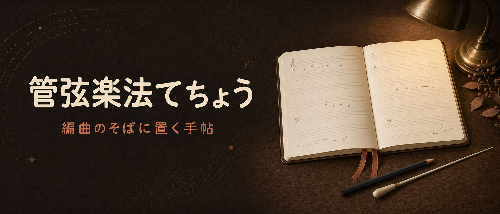
♪ 編曲のそばに置く手帖
管弦楽法てちょうビドール（1904）＋リムスキー（1913）＋フォーサイス（1914）を、今の楽器に合わせて読み直したもの
土台はビドール『近代管弦楽法』——ベルリオーズの『楽器法』に「今の楽器の実態・音域・技法」を補うために書かれた古典です。この手帖は、その知恵を楽器ごとのカード に分け、⚠️印で2026年の標準と違う所 を添えて、編曲の最中にすぐ引ける形にしました。第2期ではフォーサイス『Orchestration』とリムスキー『管弦楽法原理』を加え、原典の楽譜画像を見て覚える 形に育てています。増築では、編成の大きさで変わる音量バランスの章 を足しました。楽典・和声学・対位法の「理論の土台」 （1725–1914の原典4冊）は、この手帖の中の1章として統合 してあります。今回の増築では、しれーりんが集めて出典・ライセンスを台帳で照合してくれた楽器写真34点 を、各カードの冒頭に組み込みました（写真下の小さな字が出典とライセンスです）。3人の意見が違う所は「見比べ」表で並べてあります。音域はすべて記音（譜面に書く音）／実音（実際に出る音） を分けて書いてあります。進み方はピストン『管弦楽法』に寄せてあります——まず弦・木管・金管・打楽器・その他の楽器を1つずつ見て、次に声部の原理、音量バランスへ進み、点検のチェックと頼み方は巻末の実習にまとめました。理論の土台の章では、楽典→和声学→対位法→「禁則は、絶対か」の順に積み上げる形にしてあります。
1 書く前に楽器カードで音域と「危ない所」を確認。移調楽器は実音の欄を必ず見る。
2 書いている時に各カード末尾の「ヴォイシングの勘所」が、その楽器の置き方のコツです。意見が割れる所は「3人の先生の見比べ」へ。
3 書き終わったら巻末の「ヴォイシング・チェック」20項目を上からなぞる。5分で事故の芽がだいぶ減ります。
見つかりませんでした。言葉を短くするか、「ぜんぶの楽器」に戻してみてください。
弦楽器 オーケストラの土台
いちばん先に来るのは、オーケストラの土台になる弦楽器たち。ピストンが弦から始めたように、この手帖も弦を起点に進みます。重音・弓・ピチカートの「できる／できない」が、そのまま編曲の出来を決めます。
バイオリンVIOLON 弦楽器
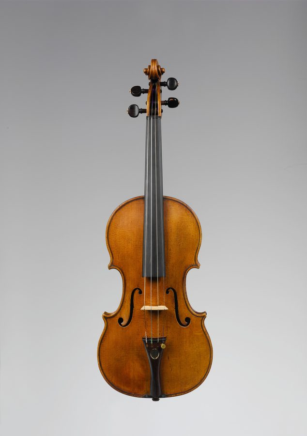
バイオリン（歴史資料の個体） The Metropolitan Museum of Art, CC0 記音＝実音 最大で G3–D7（3オクターブ＋5度）
管弦楽では最高部が危険地帯。B♭ は「最後の共鳴音」で、それより上の4音は次第に細くなります。
性格 半音階は全音階ほど鮮やかではなく（指を滑らせるため）、下行の半音階が特に難しい（上行は実用的）。G線は低音のオクターブが最も強く、共鳴は第7ポジションの C まで曇りがちです。
できること
手の伸び ：同一弦では増4度（減5度）まで。2弦にまたがる限度は短9度（慎重に）重音 ：開放弦を含むものは全て容易。6度・3度は容易、完全4度・増4度・減5度・増5度・オクターブは可能、長2度は可能運弓 ：原則は強拍＝下げ弓（⊓）、弱拍＝上げ弓（∨）。グラン・デタシェは弓全長、中デタシェは弓の1/3でアレグロの主力ソティエ（スピカート）は弓中央の反跳で軽快・高速。駒の近く（sul ponticello）は金属的な金槌色で、pp では空気のようにきらめく。指板の上（sul tasto）は弱く鈍い音
ハーモニックス：自然倍音は開放弦の第2〜6倍音。最高部の例外として、ハーモニックスの E は優秀
ピチカートの上行スラーは右手グリッサンドで速度ほぼ無制限
一弓の目安 ppp保持音は Moderato で3/4小節まで ピチカート上限 16分音符で ♩=104
危ない所
完全5度の重音は音程が不正確になりがちで「管弦楽にとって恐るべきもの」 。やむを得ない時は範囲を限定する。短2度は微妙で最大限慎重に最高部の音は、隣接音に導かれるか、前に十分な休止（Moderato で最低4拍）がないと出せない
管弦楽で G線に第7ポジションの C より上を書くのは軽率（独奏は別）
スタッカートとスピカートは別物 （スタッカートは弓先〜中央を押しつける奏法で、管弦楽では稀。下げ弓スタカートは使わない）。速い楽句を一弓2/4小節超にしないピチカート有効域は低音 Sol（G線）〜高音 Mi（E線）まで。ピチカート→アルコの移行は時間がかかり、速い曲では切り替え自体が不可能な場合がある。下行ピチカート・グリッサンドは不可
弱音器は音量を落とし性格を濃くするが、G線では鈍らせすぎるので用心。コル・レーニョは正当な理由なく使うと危険 ヴォイシングの勘所 三重音・四重音は調ごとに可能な組合せが決まります（属7・減7・9度の和音とその解決が中心）。3弦同時の力任せの奏法は、管弦楽ではごく稀なものとして扱う。
ビオラVIOLA 弦楽器
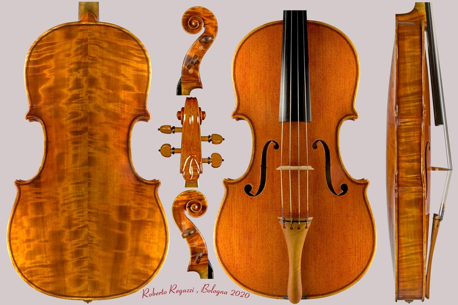
ビオラ — Roberto Regazzi製、2020年。Photo: Florenus, CC BY-SA 4.0, via Wikimedia Commons 性格 バイオリンと同じ考え方で書けますが、楽器が大きい分だけ手の伸びの限度が狭くなります。重音は6度、7度（減・短・長）、3度、4度、減5・増5、オクターブ、2度まで概ね可能。完全5度の上限は Si–Fa# の線で、低音の Fa–Si♭ は響きが悪い。ピチカートの上限はA線のオクターブまで、ハーモニックスも5度移行で同じです。
危ない所 同一弦は完全4度まで、2弦はオクターブまで （バイオリンは増4度／短9度）。これを超える9度などを書くと、奏者は低音を省略して弾きます——そして作曲家への尊敬を失います。
ヴィオラ・ダモーレVIOLA D'AMORE ／ フォーサイス1914で初登場 弦楽器
性格 ヴィオラ属で、演奏弦の下に共鳴弦 を持つ楽器。弾いていない弦が共鳴して、かすかな残響のヴェールがかかります。バロック期の楽器ですが、フォーサイスの時代はちょうど復興期 で、近代の作曲家が再び使い始めた所でした。
ヴォイシングの勘所 音量ではなく「共鳴の気配」が持ち味。特殊な色彩として、静かな場面に置く楽器です。
出典：フォーサイス『Orchestration』（1914）。
チェロVIOLONCELLE 弦楽器
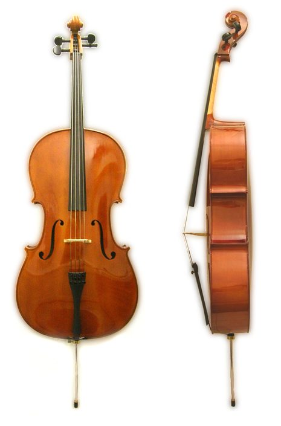
チェロ Photo: Georg Feitscher, CC BY-SA 3.0, via Wikimedia Commons 記音＝実音（現代） C2–E5（3オクターブ＋3度）
頂点の E が f での最後の良い音。それより上は聞きづらく、耳障りでざらざらします（管弦楽での話。独奏は別）。
性格 弦ごとに性格が違います。第1弦が歌い最も強い印象。第2弦は少し嗄れた響きが貴重。第3弦も歌えますが多くは低音の役割。第4弦（C）はねっとり静かで大編成の重みを支えます。低音域は半音ごとに指が違うので半音階が非常に易しく、高音は親指ポジション（デマンシェ）です。一本の弦にとどまる必然性がバイオリンより強い楽器です。
できること
手の伸びは同一弦で長3度まで
ピチカートのアルペジオは上下両方向とも良好 （バイオリンと違う）。速度上限は16分音符で ♩=104四重奏の和音を上げ弓で始めると最大の力強さが得られる特殊効果がある 危ない所
自然な運指から親指ポジションへの急な跳躍は冒険的
第3弦（G線）で5度を超えた所にある4音は、誰が弾いてもざらざらして一貫しない （原因不明と本書に明記）ピチカートの鋭い音の限界は Sol#、La、Si♭ あたり。Si♭ はほとんど振動しないので超えて書かない
親指を使う2度とオクターブは、片方が開放弦でない限り管弦楽では避ける。完全4度は同一弦では不可能 ヴォイシングの勘所 チェロだけでは低音が不十分、コントラバスだけでは響きが鈍く音程が不正確。両者が合わさると、澄んで堅固で深く可鍛性のある最良の基音になります。別々に書く例外（『マイスタージンガー』第2幕）以外は、対で扱うのが原則です。
⚠️ 古典スコアの罠： 旧慣習ではチェロの高音部記号は1オクターブ下で読みます（16フィート読み）。現代は実音で書くのが標準です。
コントラバスCONTREBASSE 弦楽器
コントラバス（歴史資料の個体） The Metropolitan Museum of Art, CC0 実音 E1–B♭3（2オクターブ＋5度）記音 実音の1オクターブ上
調律は4度間隔。最良の響き（ソノリテ）は記音 La–Ré の範囲。ヴィルトゥオーソはその上の C・D も使います。
性格 歌う楽器ではなく、オーケストラの真の低音の支え。低いポジションでは指の間隔は半音が限度です。弓が短いので、弱拍での弓の取り直しは気づかれませんが、強拍では必ず気づかれます。
できること
ピチカートは全音域で使え、最良は記音 La–Ré
重音は3度（Fa–Ré）、完全4度（Mi–Ré）、完全5度（Fa–Do）が容易
ハーモニックスは自然倍音のみ（第4弦は太さのため第4・第5倍音だけ） 危ない所
速いピチカートは奏者を疲弊させる → プルトを分けて交互に弾かせる 6度・7度・オクターブの重音は、片方が開放弦でない限り不可能。人工倍音も不可能
高いピチカートは詩情を失い平板。快速でのレガートは不可能
ヴェルディ『ファルスタッフ』の E♭ は、管弦楽では使わない方がよい ヴォイシングの勘所 チェロと対で基音を作るのが原則（チェロのカード参照）。単独では「支え」として書き、歌わせない。
⚠️ 現代の注記： 現代は5弦、またはC延長管で C1 まで下りるのが大編成では標準的です。ビドールの時代に独英で普及しつつあった5弦（低音Cまで）が、そのまま現代の形になりました。
ギター（付録）GUITARE 弦楽器
記音 実音の1オクターブ上として書く実音 記音の1オクターブ下
6弦（Mi, La, Ré, Sol, Si, Mi）、半音階で約4オクターブ。和音は5〜6音。トレモロは親指の同音反復。
危ない所 管弦楽の中では音が細くデリケートすぎて消されがちです。効果は期待しすぎないこと。
木管楽器 スコアの一番上から
フルートからコントラ・バスーンまで、スコアの並び順です。木管の合奏は「誰が一番上に来るか」「誰が低音を支えるか」で響きが決まります。
フルートFLÛTE 木管
フルート — 銀色の管体とキイが並ぶ、現代の標準的な姿。Photo: Thea Paraskevaides, CC BY-SA 4.0, via Wikimedia Commons 記音 C4–C7（3オクターブ）実音 記音どおり
35番目の音までは自由に強弱・持続ができます。36番目は名手のみ、37番目は実質不可能。一部の奏者が出せる E♭7 は例外扱いで、一般の奏者のために書くのが原則です。
性格 全楽器中もっとも運動性が高い楽器。臨時記号の少ない調が得意です。歌口で吹くため息の消費が大きく、長いアンダンテでは呼吸の計画が要ります。
できること
単切 ♩=112（低音）〜120（高音） 三切 ♩=144 複切 ♩=160
運舌は単切（t）・複切（tk）・三切（tkt）。中音域の速さは弦と競えます トリルは Ré–Mi の範囲で概ね良好（一部不可能なものあり） 倍音は基音側1〜14番目のハーモニックスまで実用 危ない所
欠陥音 ：3つのCはやや高め、E♭はやや低め、D♭（=C#）は非常出にくい → 優雅な旋律では D♭ を避ける低音のスタッカートは出しにくく魅力もないので避ける
速い下行アルペジオの一部のかたちは困難 ヴォイシングの勘所 歌の伴奏では歌より1オクターブ上に置く（ゲファールトの規則）。管の和音では最上声部を受け持ちます。スコア上は冗長に見えるフルートの重複も、実音では明るさの要で「無用の長物」ではありません。
⚠️ 現代の注記： アルト・フルート（G管）とバス・フルートは、ビドールの時代の珍品から、今は実用楽器として定着しています。
ピッコロPETITE FLÛTE 木管
ピッコロ — フルートの半分ほどの長さで、記音の1オクターブ上に鳴る。Photo: Mezzofortist, CC BY-SA 3.0, via Wikimedia Commons 記音 フルートと同じ実音 記音の1オクターブ上
最低のCと最高のBは通常出しません。B♮ は大部分の奏者には不可能で、1つ上のCは必要な場合のみ。
性格 音程が不安定で下がり気味、響き（sonorité）は貧弱です。「第1フルートのソプラノ」と考えるのは誤り。
できること 役割は機械的・効果的です。スタッカート、速い coulée（滑らかな音の流れ）、全体への輝きの付加。ベルリオーズ『ファウストの劫罰』の扱いが模範とされます。
危ない所
ソロで歌わせるのは誤り 。旋律楽器ではなく効果の楽器として書くフルートでは不可能な高音トリルを書くと、奏者は1オクターブ下げて吹いてしまう（事故のもと） ヴォイシングの勘所 「もう少し明るさがほしい」という所に薄く重ねるのが本領。主役にせず、輝きの粉として使う。
⚠️ 現代の注記： 現代のピッコロは最低音D（C管でもDまで）が標準的です。書く時の下限はDと思ってください。
オーボエHAUTBOIS 木管
オーボエ Photo: Hustvedt, CC BY-SA 3.0, via Wikimedia Commons 記音＝実音 B♭3–G6（34音、フランス式＝現代の標準）
最低の B♭ は出しにくく柔らかさも保ちにくいので信用しないこと。最高部の2音は硬く細くなり音色を失います。
性格 感情表現の幅が最大級の楽器（悲しみ・喜び・劇的・牧歌）。全音域で p も f も正確でなめらかです（上の例外を除く）。息の消費は全管楽器で最小クラスで、フルートよりはるかに長いフレーズが持ちます。
できること
単切のみ 上限 ♩=120（全音域）
トリルは現代の楽器で B♭–F（改良型はF#）まで全て正確に可能 上行の跳躍は楽。スラーで唇を休ませられる音型なら速い例もあるが例外扱い 危ない所
同じ音の速い反復は苦手（三切法はなおさら）
下行跳躍はぎこちない 。♩=120に近づくと危険になる型があるC# と D は音色は悪くないが、超高速ではデリケートすぎる ヴォイシングの勘所 音色が際立ちすぎるので、持続音・和音・第2プランで使う時は「一番良い音域」を選び、侵略的な低音を避け、常によく聞こえる前提で書くこと。オーボエとクラリネットのパートを入れ替えると響きが壊れます（ベートーヴェン第8の例）＝楽器の個性そのものがヴォイシングの一部です。
オーボエ・ダモーレHAUTBOIS D'AMOUR ／ A管 木管・移調
記音 オーボエに準ずる実音 記音より短3度下
低音 B♭ はありません。
性格 音色の柔らかさと均質性が際立ちます。バッハが最も哀切な旋律を託した楽器です（ロ短調ミサ、マタイ受難曲ほか）。
ヴォイシングの勘所 オーボエより影のある歌がほしい時に。移調（短3度下）の計算を忘れずに。
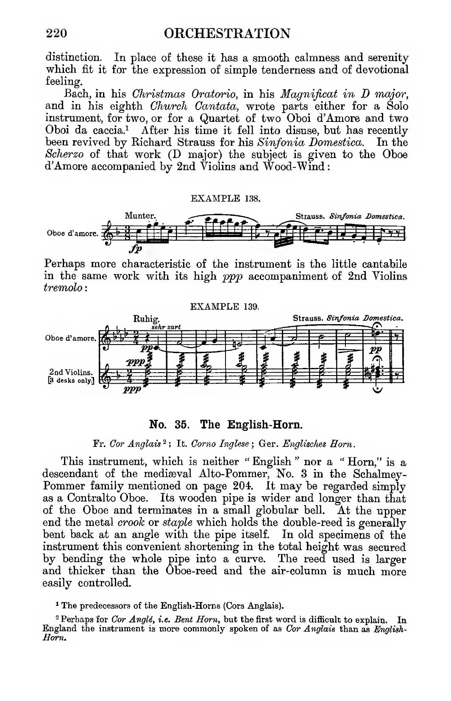
実例で見る（フォーサイス1914） — R.シュトラウス『家庭交響曲』のオーボエ・ダモーレ実例譜2つ。ダモーレの歌わせ方のお手本として引かれている。
⚠️ 現代の注記： 現代でもバロック演奏と一部の近代作品で使われますが、入手性は要確認の特殊楽器です。
コーラングレCOR ANGLAIS ／ F管 木管・移調
コーラングレ — 先端の球状のベルと、曲がったボーカル（吹き口の管）が目印。Photo: Hustvedt, CC BY-SA 3.0, via Wikimedia Commons 記音 B–F（最低B♭なし）実音 記音より完全5度下 ＝ E–C
性格 音色は3層です。低音は非常に強いが荒く、高音は虚弱、中間が最良 。トリルは現代の楽器で B–Ré まで全て可能です。
ヴォイシングの勘所 歌わせるなら中音域に。低音の荒さは「効果として欲しい時だけ」使う。
クラリネットCLARINETTE ／ B♭管・A管 木管・移調
クラリネット Photo: RobertoMM, Public domain, via Wikimedia Commons 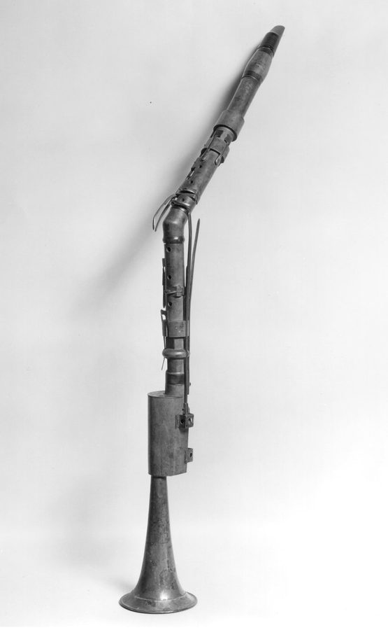
バセットホルン（歴史的モデル） — クラリネット属の仲間。F管、Anton Fischer製、19世紀中頃。The Metropolitan Museum of Art, CC0 記音 E3–A6（42音、木管で最広）実音 B♭管＝長2度下／A管＝短3度下
極限域は困難で、C7 は大多数の奏者に不可能。B♭管は記音E→実音Dまで、A管は記音E→実音C#まで（最低音が半音低い）。
性格 音色は3層。低音＝シャルモーは劇的だが控えめで弱く、中音は万能、高音は華やか。敏捷性はフルートに次ぎ、音階・半音階・主要三和音／属7／減7のアルペジオが美しい楽器です。
できること
運舌上限 ♩=120 中音域 p の持続 40〜50秒（名手の計算）
管楽器で唯一、本物の pp エコー効果 が出せる（低音でも中音でも極限まで落とせる）中音域は万能の溶け合い役。第2フルート・第2ホルン・バスーンの代役まで務まる 得意な調：C, F, G, B♭（とその関係調） 危ない所
低音シャルモーを主題の中心にしない（経過的に使う音域）
D長調・E♭長調は難しい方。遠い調への移行は速いパッセージでは慎む
B♭管とA管の持ち替えには休止が必要 。楽章の途中では持ち替えないフルート並みの速度を要求すると正確さが落ち、高音域では目立ちすぎる
A, B♭, B♮ の3音は常に発音が微妙。バッテリーは5度を超えると重くなる ヴォイシングの勘所 B♭管は華やか、A管は気品。迷ったら中音域へ——そこが一番溶けて、一番よく働く場所です。
訂正（フォーサイス1914） 昔の教本に載る「不可能なシェイク（トリル）の表」は、1914年時点で既に時代遅れ 。全音・半音シェイクはほぼ全域で可能で、残る苦手は低い F♯ 系など6つだけです。
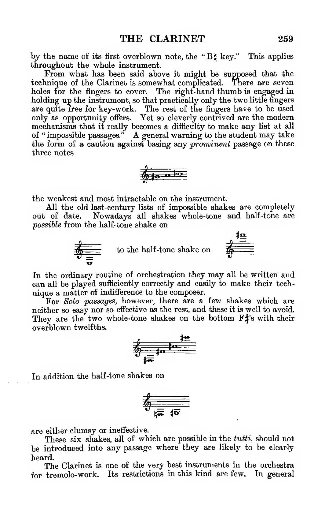
原典で見る（フォーサイス1914） — 「不可能トリル表は時代遅れ」と書いたページの実物。残る苦手は6つだけ、と明記している。
⚠️ 現代の注記： 現代の音色区分は「低音域＝シャルモー、中音域＝クラリオン」と分けるのが普通です（本書の低・中・高の3区分と読み替えてください）。ピッコロ・クラリネットは E♭管（実音は記音より短3度上）で、軍楽と特殊効果用。アルト・クラリネットは現代でも実用度は低めです。
バス・クラリネットCLARINETTE BASSE 木管・移調
記音 B♭／A管の記譜実音 記音の1オクターブ下
記譜は低音部記号をビドールが推奨。
性格 低音楽器と思われがちですが、美しい旋律楽器で、低音域こそ本領です。
ヴォイシングの勘所 バスーン＋ホルンとのブレンドが絶妙です（「エリザベートの祈り」）。低音の歌い手として書いてあげてください。
⚠️ 現代の注記： 現代は記音C（実音 B♭1）まで下がる拡張管が標準です。記譜は高音部・低音部記号の併用（フランス式／ドイツ式）が混在します。
ペダル・クラリネットPEDAL CLARINET ／ コントラバス・クラリネット ／ フォーサイス1914で初登場 木管・移調
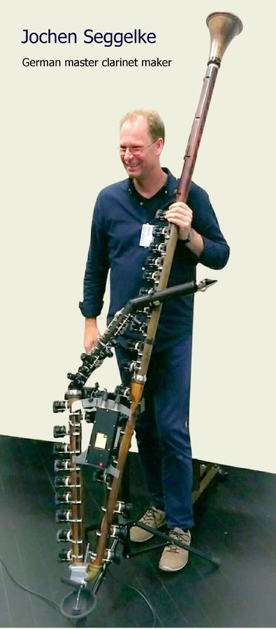
現代の電動式コントラバス・クラリネット「CLEX」 — 写っているのは歴史的なペダル・クラリネットそのものではなく、その末裔にあたる現代楽器。人と並ぶと大きさが分かる。Photo: Achim Hohlfeld, CC BY-SA, via Wikimedia Commons 性格 クラリネット属の最低音側を担う大型楽器。バス・クラリネットよりさらに下を受け持ち、木管の最底辺を支えます。
ヴォイシングの勘所 低音の「歌」ではなく土台として扱うのが基本。書く前に、その編成に実物があるか確認が要る特殊楽器です。
出典：フォーサイス『Orchestration』（1914）。
バスーンFAGOTTO 木管
バスーン Photo: Mezzofortist / Eddau, CC BY-SA 3.0, via Wikimedia Commons 記音＝実音 B♭1–B♭4（37半音）
f では全域良好。ソロ曲では D5 まで、ワーグナーは E5 まで使用（チェロ・ビオラの斉奏で支えた例）。
性格 最低5度は堂々として金管と張れるほど豊か（低音 B♭ はバス・トロンボーンの代役にもなれますが、息切れに注意）。中音域が最良で、一部はホルンに近い音色。高音は甘美な音と悪い音が混在します。
できること
運舌 低音 ♩=126／中高音 ♩=138 の例
1〜2オクターブの跳躍は驚くほど軽妙 スラーは上行を好む 危ない所
p での最低部の B♮ と D はアタック困難。E♭〜G は高めで音も良くない
高音の A♭ は非常に悪い （技術では直せない）。最高の D は予備音（グレース）なしでは出せないG♭, E♭, D, C#, C♮ から始まる下行スラー音型は効果が悪い（切奏なら可）
長い困難な持続は避ける（唇が混乱する）。バッテリーは中音Cより下では効果が悪い ヴォイシングの勘所 万能の融合役。木管・金管・弦すべてのグループと溶け合い、存在を気づかれずに弦の音量を補強できます。疑わしい音もチェロとの斉奏で美しくなります。フルートと2オクターブ離れて重ねると最も豊かな音質（モーツァルト）。持続和音の本当の低音は、ホルンよりバスーンに任せるのが確かです。
⚠️ 現代の注記： 現代は A1 までが標準域です。ビドールの「B♭より下は書くな」は当時の楽器事情で、今は低音Aも普通に書けます。
コントラ・バスーンCONTRE-BASSON 木管
コントラ・バスーン Photo: Mezzofortist, CC BY-SA 3.0, via Wikimedia Commons 大きさ比べ — 左がバスーン、右がコントラ・バスーン。管を折り返してこの高さになる。Photo: Sotakeit, Public domain, via Wikimedia Commons 記音 バスーンに準ずる実音 記音の1オクターブ下
最良は最低音の7度以内。上へ行くほど弱く鼻声になり、やがて消えます。
性格 深いペダル（土台の持続低音）のための楽器。強い肺が要ります。サン＝サーンス交響曲第3番の深い音色が好例。
危ない所
détaché（切り離した奏法）は避け、ゆったり使います
低音の持続は Moderato で2小節が限度 → 休息の設計が必須ベートーヴェン第9の速い高音パッセージは真似ない（「彼が聾だったからできた無茶」） ヴォイシングの勘所 速さではなく深さで使う。短い休息をこまめに入れて、土台として置く。
⚠️ 現代の注記： 現代のヘッケル式は実音 B♭0（長いベルでは A0）まで下り、上は C4 あたりまで。本書の「下限C」は当時の事情です。
サリュソフォンSARRUSOPHONE 木管・歴史的楽器
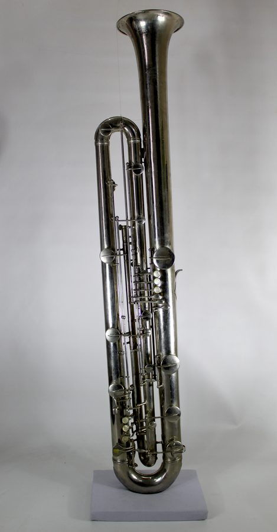
サリュソフォン — ラプラタ大学所蔵。出典は「変ホ長調のバス」と記す（分類は未確定）。Museo de Instrumentos Musicales Dr. Emilio Azzarini, Universidad Nacional de La Plata, CC BY 3.0 性格（1904年当時） コントラバス（C管）はコントラ・バスーンの対抗馬で、発音と低音の強さでは優位でした。バスーンと同じ運指・トレモロが可能で、低音でもスタッカートが速い（♩=112–116）楽器です。
フォーサイス1914では 「バスーンの金属版」として紹介され、売りは音量 。木製のバスーン属では届かない音圧を、金属管で出す発想の楽器でした。
⚠️ 現代の注記： 現代では完全に廃れた楽器です。古いスコアで出会ったら、コントラ・バスーン（またはコントラバス・クラリネット等）への置換が前提になります。
金管楽器 唇で倍音を選ぶ楽器たち
金管はみんな「倍音列の中から唇で音を選ぶ」仕組み。だから高くなるほど音と音の間が狭くなり、唇のわずかなミスが音程事故になります。
金管の原理（最初にこれだけ）
実際に使えるのは概ね第2倍音から上 。基音（第1音）まで下れるのはテューバ類の大口径だけ
第7・11・13・14倍音は、自然倍音としては音程がずれています （11は特に）。ピストン／スライドで管長を変えて半音階を埋めるどんな名手でも実用は3オクターブ半まで
小口径（ホルン、トランペット）は第12〜16倍音以上まで届くが、倍音が高いほど唇の労作が大きい
ホルンCOR ／ F管が標準 金管
ホルン Photo: BenP, CC BY 2.5, via Wikimedia Commons 実音域 38半音（ほぼバスーンと等しい）
塞音（手で塞ぐ音）の音程は塞ぎ方で変わります。旧式のゆるい塞音は記譜音より半音低く響き、現代の強い塞音は半音高く響く （奏者は半音低く読む）——フォーサイス1914の結論で、両方の説が場合分けで正しいと分かりました。ビドール付録の「半音下がる」はゆるい塞音の場合です。
性格 どの楽器とも溶ける楽器。クラリネットとの二重奏は絶品、チェロ＋コントラバスと混ぜるとトロンボーン的な鋭さも出ます。4部ホルンは木管アンサンブルに加わると音量が半分以上増します。
できること（色彩2種）
Con sordini （弱音器）＝ビロードのような pp。開放音の反響のような響きCuivré （+印、手で半塞）＝金属的な音。どの強さでも可。ただし第3倍音より下では出ない。開放に戻す時は Ouvert と書く運舌は単・複・三切とも可能で、高音域ではフルートに拮抗
トレモロは唇のみ（ピストンは細長い管では間に合わない）。ただし小さい音程のトレモロはピストン操作も実用的
息の目安（中音・♩=120） f で11拍／mf で14拍／p で20拍
危ない所
唇は高音用か低音用かを選ばなければなりません 。高音を吹いた直後の低音（その逆も）は良い音にならない第9〜10倍音を超える速い切奏は避ける。第8・9倍音以上の長持続は、圧力＝空気消費が激しく危険
用語の混同に注意：gestopft を弱音器の意味で使わない ヴォイシングの勘所 第1・第3ホルン＝高音担当、第2・第4ホルン＝低音担当と、最初から書き分けるのが最大の原則。そして4部の最下声は最も息を食い最も鳴らないので、持続和音の本当の低音はバスーンに任せる方が経済的で確かです。弱音器つきホルンは、ディミヌエンドの終結に最適。
⚠️ 古典スコアの罠： 旧式の低音部記号のホルン記譜は「記音より完全4度上」が実音です（現代の低音部記号は1オクターブ下が実音）。古い譜を読む時に事故りやすい所です。
トランペットTROMPETTE 金管
トランペット Photo: Amada44, CC BY-SA 3.0, via Wikimedia Commons 記音（現代標準） F#3–C6実音 B♭管＝長2度下／C管＝記音どおり
ナチュラル・トランペットの実用下限は低音E。半音下の E♭ は今でも不安で、指揮者は第1トロンボーンに代奏させるのが普通でした（シューマン『マンフレッド』）。
性格 力・高貴さ・劇的表現でコルネットに勝ります。弱音器はワーグナー以降、標準の色彩です（f で吹かせる指定も多い）。
できること
運舌上限 ♩=120〜144 息（p） 低音8〜9小節／中音12〜14小節、f で半減
運舌は単・複・三切ともホルンより容易 トレモロはホルンと逆で、ピストン使用が必須 （唇だけでは不可能） 危ない所
最高速の持続は疲労で発音が重くなる → 長く続けない
バス・トランペットは実在するのはC管のみ。低音で第3倍音まで下げるのは避け、高音はFを超えない ヴォイシングの勘所 ビドールは小トランペットの音色を「気高さを欠く」と批判し、実用域は G–G の2オクターブが本領という立場でした。現代でも、高音域の多用で音色が痩せる点は共通認識です。
コルネットCORNET À PISTONS ／ B♭・A管 金管
性格 中音域の俊敏さは金管随一。半音階・トレモロ・回転音型はフルートやクラリネット並みです。トランペットとの違いは音色——ねばりと普遍性（コルネット）対、輝きと気高さ（トランペット）。
危ない所
最低の F# から5〜6半音は音質不良。第6倍音以上は次第に痩せる
最高音は、いきなり書かず漸進的に到達させると良い音になる ⚠️ 現代の注記： 現代の管弦楽ではコルネットは独立パートとして残る（仏・露系作品）一方、B♭トランペットで代用されることも多い楽器です。弱音器の音は「最も非音楽的」とまで評されたので、効果の確認を。
トロンボーンTROMBONE ／ テノール2＋バス1が標準 金管
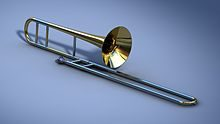
トロンボーン — 入手できた画像が小さいため、小さめの表示。Photo: Josef Pich, CC BY-SA 4.0, via Wikimedia Commons テノール 35音・7ポジション良い音域 低音G〜B♭の帯（第8倍音帯）
バス・トロンボーンはF管（テノールの完全4度下）。
性格 トロンボーン群のオクターブ・ユニゾン＋cuivré のクレッシェンドほど劇的なものはありません。一方で息は、f では驚くほど消費し音ごとに呼吸する場面も。p の持続は対照的に長く、Moderato で8小節は疲労なしに持って「煙のように」消えます。
できること
トレモロは唇のみ、倍音7〜9の全音関係のみ
スライド・グリッサンドはダンスホールの効果で、交響曲にはほぼ使われない 危ない所
第7ポジションは「できる限り敬遠」 。その固有音（低音EとB）は楽器最悪の音。ペダル音は実質ポジション1〜2の B♭ のみ良い音域の下は音程の確かさを欠く。第8〜10倍音を吹いた直後に低音G・F・Eへ降りるのは苦行（ホルンと同じ唇の専門化）
本当のレガートは同ポジション・同倍音内だけ 。それ以外は sostenuto と指定して「最善のレガート」を求めるのが作法。スラー終わりの音が切れそうな所にはアクセントを（ワーグナーの慣行）バス・トロンボーンは発音が緩やかでペダルは実質不可能。大家は E♭ より下を滅多に使わない ヴォイシングの勘所 最低部の数音は「全曲に数回の特別な音」として使う——『トリスタン』で低音 B♮ は全曲で1回だけ、持続低音は E♭ 止まりで常に p でした。バス・トロンボーンは低音Bまで見事な音が出るのが、テューバとの違いです。
📌 追記（フォーサイス1914）： バス・トロンボーンには、親指バルブで追加管を切り替える機構が既に書かれていました——現代の F アタッチメントの原型です。フォーサイスは「将来のトロンボーンはスライド主体＋補助バルブになる」と予測し、その通りになりました。
⚠️ 現代の注記： 現代は B♭/F管（アタッチメント付き）テノールが標準で、実用域は大幅に広がっています。アルト・トロンボーンは衰退し、コントラバス・トロンボーンはワーグナーのリング用の特殊楽器です。
テューバTUBA（バス・サクソルン） 金管
テューバ Photo: Žiga, CC0, via Wikimedia Commons 記譜 C調基準（奏者が移調して読む）本領 C–C の2オクターブ
性格 円錐管のサクソルン族の一員で、音色が均質。C–C の2オクターブは驚くべき音色と張りがあります。運舌は意外に軽快（音階 ♩=104、跳躍 ♩=84 の例）。
危ない所
一番弱いのは最低音域 。管弦楽では Sol を越えて下げるのは無謀テューバに低音Fを書くのは無暴（C管に存在しない）。弱音器を付けると半音上がって実質使用不可になる癖もある
コントラバス・テューバ（B♭）は最も響くが音域は最も狭い（低音Gまで明瞭） ヴォイシングの勘所 対比で覚える：バス・トロンボーンは低音Bまで見事な音、テューバはGまで。最低音域に頼らず、C–C の帯で土台を作る。
注意（フォーサイス1914） トロンボーンの和音にテューバを混ぜると、テューバは構造的に一段強く鳴ってしまいます 。バランスが崩れる時は、テューバを外す・音域をずらすなど、代替配置の工夫が要ります。
⚠️ 現代の注記： 現代のテューバは F／E♭管が主流で音域も拡張されていますが、「最低部の数音は弱く p 向き」という構造は今も同じです。同族のフリューゲルホルン（B♭）は甘く詩的、ワーグナー・テューバはこの一族の複製です。
打楽器 「止める／残す」を書くのが礼儀
打楽器で一番大事なのは、音そのものより「余韻をどうするか」と「替える時間があるか」。この2つを譜面に書くかどうかで、現場の事故が決まります。
ティンパニーTIMBALES 打楽器
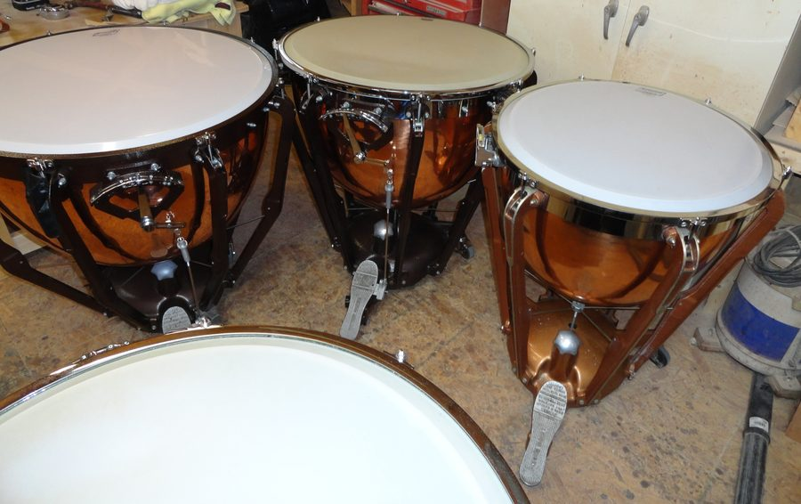
現代のペダル式ティンパニー Photo: Moreau1, Public domain, via Wikimedia Commons 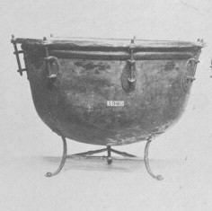
歴史資料のティンパニー — 脚付きのケトルドラム。The Metropolitan Museum of Art, CC0 1台の音域 完全5度ほど安全圏（全体） 低音F〜高音F
大：F–C、小：B♭–F、中：G–D または A–E（国による）。3台あれば各4半音の守備で全半音階をカバーできます。
性格 音は「ハープの和音のように空へ消えゆく振動」が本質。最低音は最も重く余韻が長く、中音域はチェロのピチカートのように良い音（Ré が最上）。大音量の f では音高が埋もれてリズム楽器になります。
できること
ロールは tr. かトレモロ線で書く（線の数はテンポで変える）
クレッシェンド・ロール中に太鼓を替えても耳では判別できない（継ぎ目なしの ff 到達が可能）
2台同時打ちは可。同時2音のロールには奏者2人が必要
撥は皮製が通常（f も p も）、海綿製は特別に弱く甘い効果。打点は中心と縁の中間（縁は鼻声で乾く） 危ない所
高音 F# は貧弱（ベートーヴェンは1オクターブ下と重ねてのみ使用）。低音Eは pp でのみ音価を持つ「憂鬱な破れ太鼓」の音。ベルリオーズやワーグナーの例外は借りない
調律変更の余裕は、ビドール「1音で約1小節」よりフォーサイス「全音の変更でも最低2〜3小節（Moderato）」が安全 。大家は長3度を超える変更を避け、必要なら段階的に導く。調律の組合せは作曲者が予め設計する複数小節のロールはスラーで結ばないと、奏者は最初の小節だけと誤解する。終わりの音が「分節されるのか、ロールの延長か」を明確に
軽いリズムに低音 F, F#, G を書くのは下手（余韻が長すぎる） ヴォイシングの勘所 ティンパニーが本当のバスとして機能するのは、音高が耳に残って疑いが生じない時だけ。調律設計と「余裕のある変更」までが作曲者の仕事です。
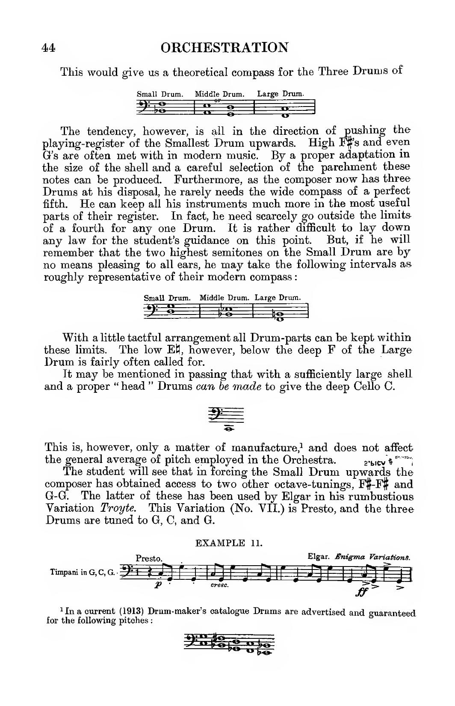
実例で見る（フォーサイス1914） — 3台のティンパニーの音域と、エルガー『エニグマ変奏曲』の実例譜。調律の組み合わせをどう設計するかが見える。
📌 追記（フォーサイス1914）： ペダル式ティンパニーは1914年時点で既に存在していました。ただし音が鈍くなる（"tubbier"）という留保つきで、ビドールの「機械式への美的反対」とは違う、実務的な距離感です。
⚠️ 現代の注記： 現代はペダル式が標準で調律変更は格段に速く、グリッサンドも可能です。標準セットは4台（32／29／26／23インチ等）。それでも「変更には余裕と設計が要る」という原則は今も有効です。
小太鼓・タンバリン・トライアングル ほかPETITES PERCUSSIONS 打楽器
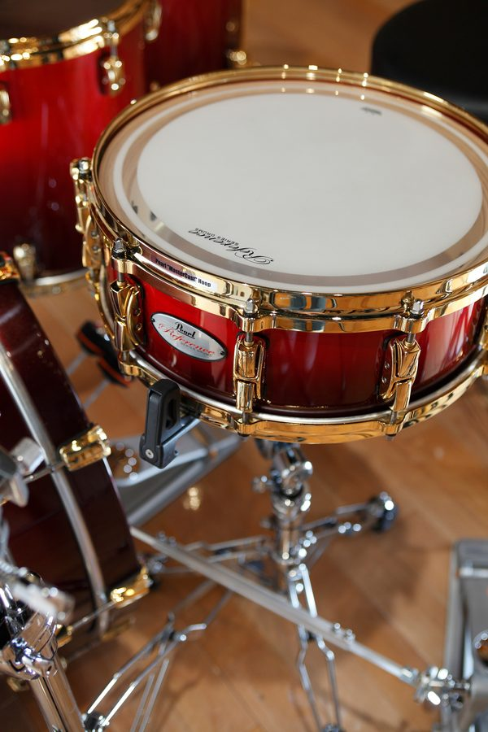
小太鼓 Photo: Englishteacher68, CC BY-SA 4.0, via Wikimedia Commons 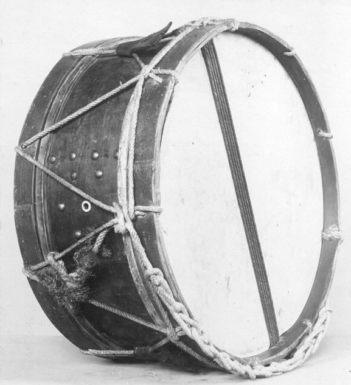
歴史資料の太鼓 — ロープで膜を張る古い構造。The Metropolitan Museum of Art, CC0 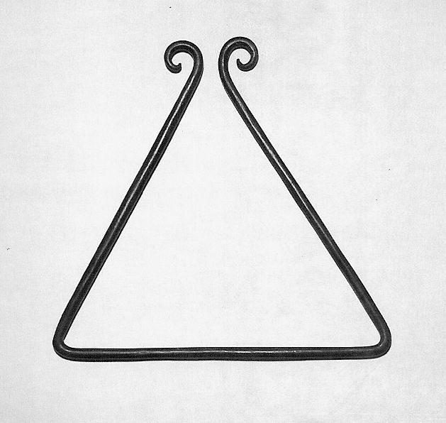
トライアングル（歴史資料） The Metropolitan Museum of Art, CC0 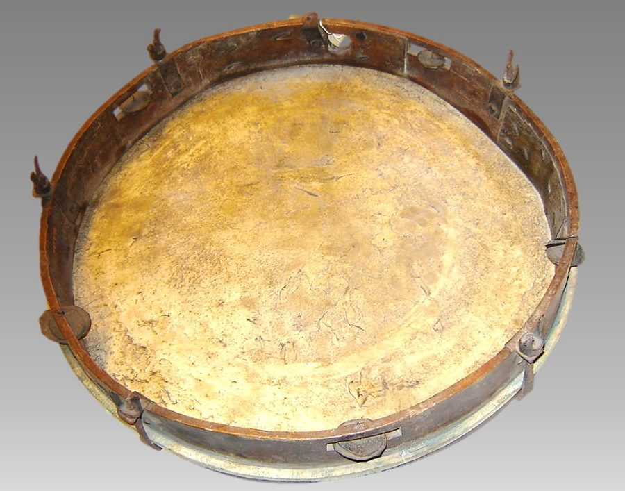
タンバリン（歴史資料） The Metropolitan Museum of Art, CC0 小太鼓（Tambour militaire） 無音程の「響き」で、どの調とも喧嘩しません。奏法は単打（稀）、fla（2本の速い連打）、誇張打（coup de charge）、ラ打ち（3〜10連打）、持続ロール。膜を布で覆うと不吉で痛ましい音になります。中太鼓（Caisse roulante）はスネアなし・胴が長く鈍い音で、グルックとワーグナーが愛用。
タンバリン 奏法は3つ——手の甲で打つ／振る（鈴のトレモロ）／親指で擦る（短い擦り打ち＋鈴）。1線譜で書きます。
トライアングル 装飾音つきの打法が好まれます。装飾群は奇数（3、5）が優秀で、4は不自然 （打つ方向の都合）。pp では上端を打ちます。どんな pp の込み入った音の中でも聞こえてきて、単独でリズムを担える楽器です。
カスタネット 木製・鉄製の対。あらゆるリズムが可能で、スペイン的色彩。複数を交錯させて最大強度へ積む用法があります（『サムソンとデリラ』）。
シンバル・大太鼓・タムタムCYMBALES / GROSSE CAISSE / TAM-TAM 打楽器
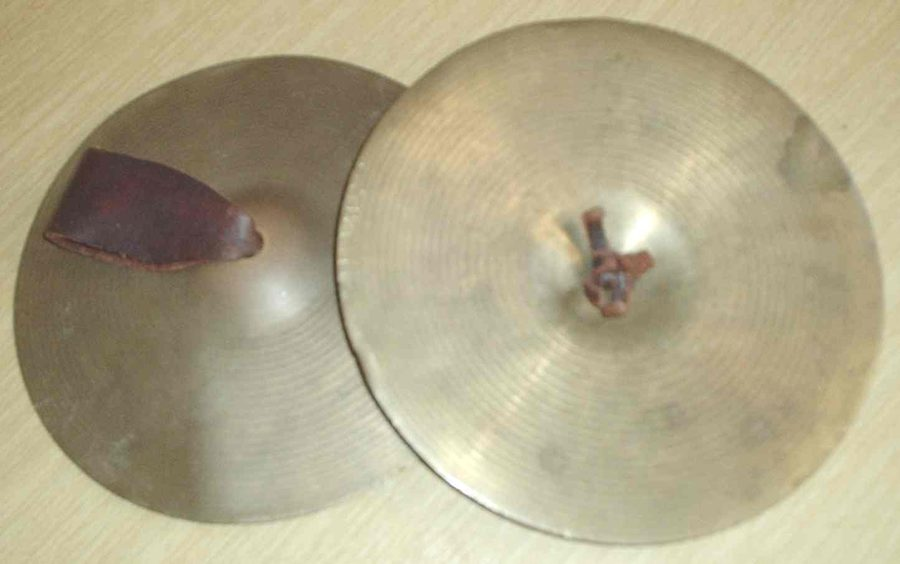
合わせシンバル Photo: Andrewa, CC BY-SA 3.0, via Wikimedia Commons 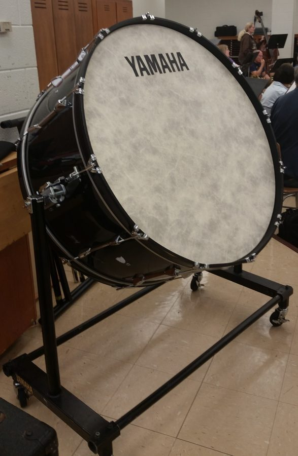
大太鼓 Photo: Yooperz, CC BY-SA 4.0, via Wikimedia Commons シンバル 合わせシンバルと吊りシンバル（片方を撥で打つ）の2系統。ロールは f では両打ちの高速交互、p〜cresc. では吊りシンバルを撥で擦ります（p↔f が完全に均等）。軽く打った吊りシンバルは「オーケストラの上に金粉が立ち昇る」効果。
大太鼓 丸く重い音、フェルト撥。柄の中ほどを持って打つと雷のようなロール。ティンパニー撥で打てば、ティンパニーより低いトレモロ が得られます。シンバルとの pp は神秘的で高貴。
タムタム 無音程ですが周囲の和音に同化しやすい楽器です。打楽器の「高さ」感覚は シンバル ＞ タムタム ＞ 大太鼓。
危ない所
シンバルは記譜で「止めるのか、余韻を残すのか」を必ず区別する 大太鼓と同時の時はシンバルが前に出すぎるので配慮を
タムタムは和音が変わったら振動を急いで止める （ピアノのペダルを踏みっぱなしにするのと同じ事故になる）
鍵盤打楽器・鐘CELESTA / GLOCKENSPIEL / XYLOPHONE / CLOCHES 打楽器
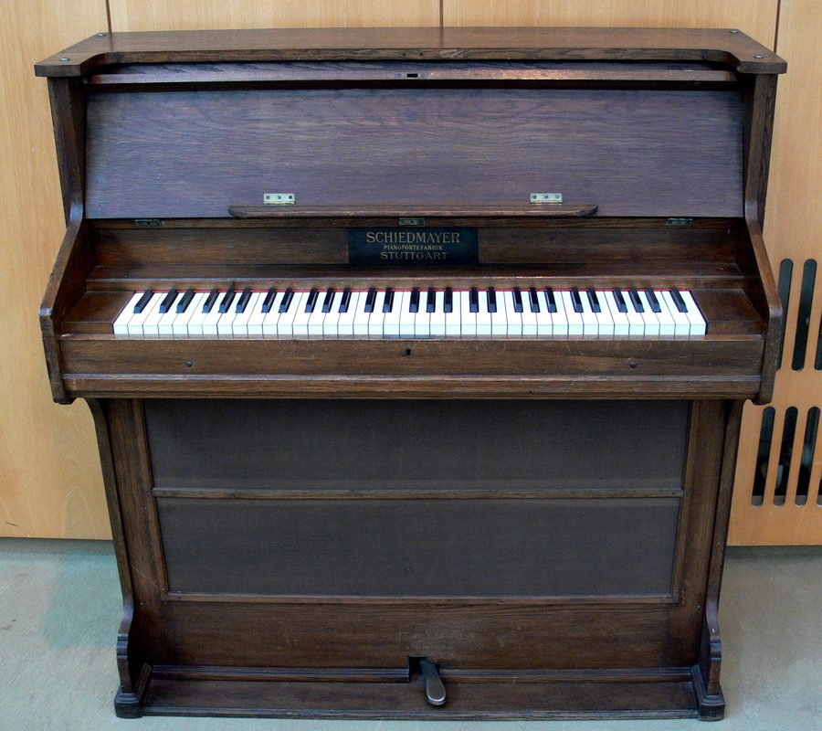
チェレスタ — Schiedmayer製、ベルリン楽器博物館所蔵。Photo: Museumsinsulaner, Public domain, via Wikimedia Commons 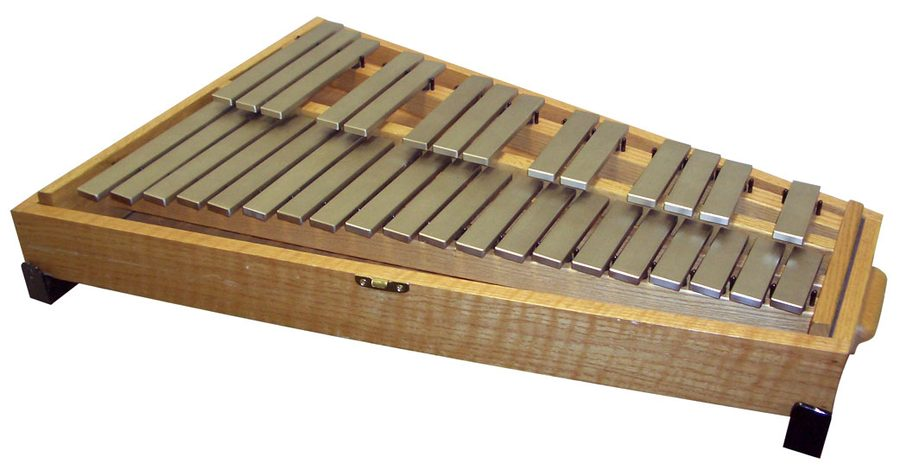
グロッケンシュピール Photo: flamurai, Public domain, via Wikimedia Commons 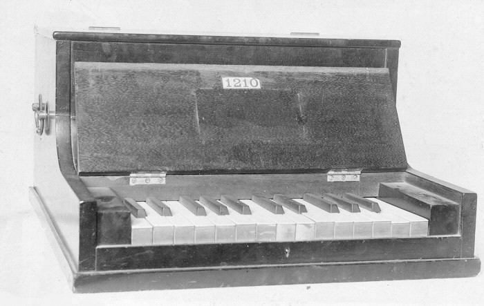
鍵盤付きグロッケンシュピール（歴史資料） The Metropolitan Museum of Art, CC0 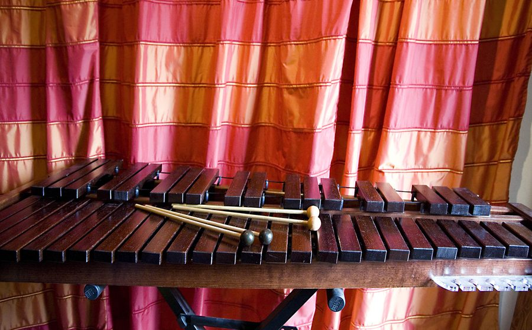
木琴（シロフォン） Photo: Roumpf / Olivier Lemoine, CC BY-SA 3.0, via Wikimedia Commons 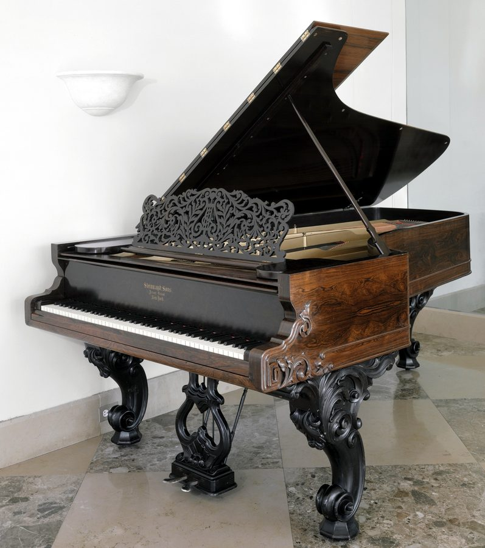
ピアノ（歴史資料のグランドピアノ） — 本文で、鐘の代用に低音弦を使う工夫が出てくる楽器。The Metropolitan Museum of Art, CC0 チェレスタ 実音は記音の1オクターブ上 。4オクターブ（本書）。純で爽やかな詩情の音で、強い f は出ません。機構は鋼板を叩いて木製共鳴器で鳴らす 仕組みで、調律は狂いにくい楽器です。
グロッケンシュピール 実音は記音の2オクターブ上 （フォーサイス1914と現代標準が一致）。ビドール本書の「1オクターブ上」は古い慣行で、ここで訂正します。中音域が最良、余韻が拡がる時間を残して書きます。
木琴 3オクターブ、最良は C–G の範囲、実音は記音の1オクターブ上。
古式シンバル（クロタル） 直径15〜20cm、銀のような音色で音高が高い楽器（ベルリオーズ『ロメオ』『トロイ人』）。ロールとトレモロは避けます。
鐘 本物の鐘は巨大すぎて実用外（Do の鐘は22,900kg）。代用＝半球のティンブル鐘、ピアノ低音弦＋タムタム pp 等の工夫が前提。歌劇の鐘は Sol より低くしない（ゲファールト）。
⚠️ 訂正（フォーサイス1914）： ビドールはチェレスタの機構を「音叉を叩く」と書きましたが、これは誤り です。音叉式は別楽器ダルシトーン （次のカード）のことで、フォーサイス本人が「混同するな」と明記しています。チェレスタは現代は4〜5.5オクターブのモデルがあり（Schiedmayer製が標準）。クロタルは現代では音程のある打楽器として常用されます。
ダルシトーンDULCITONE ／ フォーサイス1914で初登場 打楽器・鍵盤
性格 音叉を叩く 鍵盤打楽器——チェレスタと間違えられがちですが、発音体がまったく違います。フォーサイスは「チェレスタと混同するな」とわざわざ明記しました。ビドールがチェレスタの説明で書いた「音叉」は、本来こちらを指していたと見られます。
覚え方 音叉＝ダルシトーン、鋼板＝チェレスタ。この1行で、ビドール以来の混同は終わりにできます。
出典：フォーサイス『Orchestration』（1914）。
サクソフォン・ハープ・オルガン 客演と、響きを預かる楽器たち
スコアでは打楽器の次に置かれる3つの仲間です。どれも「響きが残る・広がる」性質があるので、書く側は余白の設計が要ります。
サクソフォン族SAXOPHONES サックス
ソプラノ B♭管アルト E♭管テノール B♭管バリトン E♭管
音域はだいたいオーボエと同等（低音 B♭ を含む）。バリトンの上限は E♭、アルトとテノールは F まで。運指はオーボエと同じで、オーボエで可能なトリル・トレモロは全て可能です。
性格 スラーの楽句が最も適します。四重奏はオルガンのような錯覚を生みます。アルトが一族の最良 で、均質で美しい低音を持ち、音量はクラリネット4〜5本分に対抗します。息は中音域で Moderato 4拍子・10小節まで。
危ない所
ソプラノとテノールは最低音が弱いので慎重に。アルトとバリトンは最低音が優秀
全種共通：最低6度の範囲を pp で吹かせるのは避ける アルトの最高の5〜6音（テノールは4〜5音）は名手用で、だんだん細くなる ヴォイシングの勘所 ビドールの留保は「音が少し荒く、近くの楽器と釣り合わない」（ビゼーは例外的に完全）。主役にするならアルトを中心に据えるのが無難です。
⚠️ 現代の注記： 現代ではアルト・サックスを中心に、管弦楽の客演楽器として定着しています。実用域もアルティッシモで拡張されています。
ハープHARPE ／ 47弦 ハープ
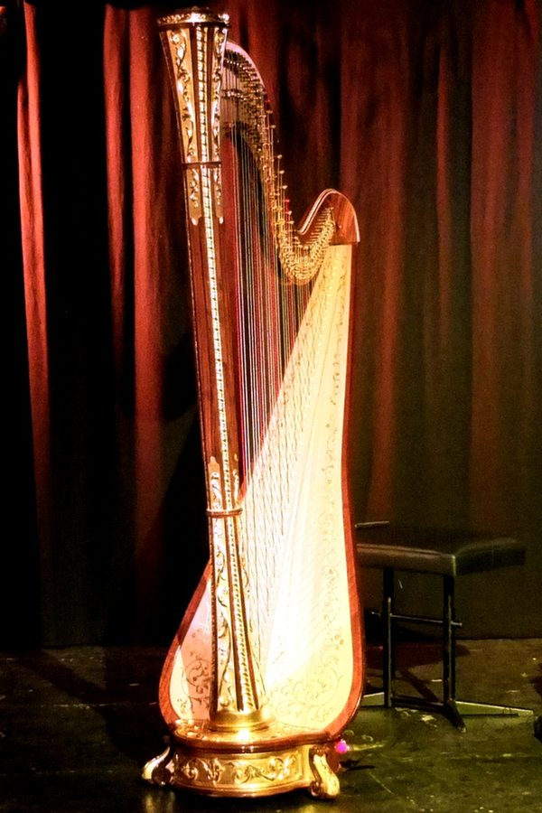
ペダルハープ — Salvi製のコンサート・ペダルハープ。Photo: WinfriedSchneider, CC BY-SA 3.0, via Wikimedia Commons ハープ（歴史資料） The Metropolitan Museum of Art, CC0 音域 C♭1–G♯7（47音）仕組み 7つのペダル×3段が全オクターブに同時作用
全音階が基本で、ペダルで半音階化します。共鳴地図：最低3音は少しうつろ。低音 Fa から Si までは f でも p でもふっくら共鳴。高音のオクターブは響きが落ちますが pp で優秀。最後の音は乾いて細い。
できること
異名同音の利用が鍵 ：別弦の変位で F♮ と F# を同時に鳴らせる（例：E弦をE#にしてF♮を得る）。同じ音を2本の弦で交互に弾く超高速反復も可能和音の調律（accord）を譜頭に示せば臨時記号を省ける
ハーモニックスは第2倍音のみ。記音は実音の1オクターブ下＋○印。左手は近接音程なら2〜4音同時可、右手は1音のみ
エトゥフェ（共鳴を生まれてすぐ止める音色）はピチカート的な錯覚、ギターのようなスタッカート
グリッサンドは、ペダルで和音に調律しておけば指を滑らせるだけで鳴る 危ない所
ハープにはダンパーがありません 。共鳴が伝播し消える時間を残し、混濁を避け、協和音と全音階を中心に書く。「人気のない大聖堂のオルガン」のように扱う奏者は第5指を使わない → 片手の和音は最大4音 （マイヤーベールの5音和音は手落ちの実例）速い曲では単純化し、左手はオクターブか単音だけに（でないと低音が唸って濁る）。同一手での和音の繰り返しは避ける
ハーモニックスは f では使えない。片手だけのトレモロは悪い（両手で p なら非常に良い）
音階・アルペジオはどの調でも同じ運指。ただし #系より ♭系の綴り（C♭, G♭, D♭）を選ぶ ヴォイシングの勘所 両手の間隔は、広げすぎも近づけすぎも悪く均衡が要ります。片手でつまんだ弦をすぐ他方の手でつかまない——響きの余白までが楽譜の仕事です。
オルガンORGUE オルガン
性格（ストップの3族）
Fonds （基音群）：オーケストラの弦群に相当。8フィートが音楽の普通形Mutations ：倍音を再構成する群。バッハの Organo Pleno は Fonds＋Mutations で、手鍵盤のリードは含まないAnches （リード）：バッハ時代は専らソロ主題用で、ペダルに集約 できること 音は無限に持続します（肺の制約なし）。コンビネーション・ペダルで演奏を止めずに音色変更ができるので、継ぎ目で登録変更できるように設計できます。
危ない所 表現は「建築的」でなければならない——クレッシェンドは設計図のように漸進的・幾何学的に。神経質な表情付けは楽器をアコーディオンに堕落させます。
ヴォイシングの勘所 ベルリオーズの「オルガンとオーケストラは皇帝と法王（支配し合う）」説は、スウェル・ボックスの発達で過去のもの。今は均衡を保てる前提で書けます。
理論の土台 楽典・和声学・対位法 — 原典4冊
管弦楽法の3冊は楽器の本です。その土台には、楽典・和声・対位法の原典4冊——フックス(1725)、リムスキー和声学(1886／仏語版1910)、サヴァール、ゲールケンス(1914)——を置きました。編曲の最中に引くものではなく、「なぜそう書くのか」を腰を据えて読む章 として、楽典→和声学→対位法→「禁則は、絶対か」の順に積み上げてあります。ヴォイシングの「なぜ」は、たいていここに根があります。
1 楽典記譜法と用語の定義集。移調の読み替えまで。
2 和声学連結・重複・終止・非和声音。4声の書き方の規則集。
3 対位法四つの根本規則と種対位法。師弟の対話で進む訓練。
4 禁則は、絶対か平行5度・8度はなぜ禁じられたのか。原典と現代の説明を分けて読む。
1. 楽典 言葉と書き方をそろえる
楽典は「音楽の文法書」というより、記譜法と用語の正確な定義集 です。ここでは2冊を役割分担で使います。ゲールケンス＝用語と浄書の辞書、サヴァール＝調・音程・移調の実務手続き。
ゲールケンス『記譜法と音楽用語』KARL W. GEHRKENS “MUSIC NOTATION AND TERMINOLOGY”
この本は何者か： Karl W. Gehrkens（オーバリン音楽院）著、1914年刊。Project Gutenberg #19499 で全文が公開されている、アメリカの教科書です。「楽典」というより記譜法と音楽用語の正確な定義集 で、楽譜を読む・書く時の「正しい書き方」の基準書として使います。
ここで身につくこと 用語の意味を辞書として引く引き方と、付点・休符・略記号など「書き方の是非」の判定基準。全20章＋付録5の地図が分かれば、必要な章だけ拾い読みできます。
章の地図（全20章＋付録5）
1 正しい記譜法の原則 2–3 音楽記号の定義 4–5 略記号・サイン類 6 装飾音 7–8 音階 9 補助語と語尾 10 小節 11–12 テンポ 13 強弱法 14–15 形式と様式の用語 16 声楽の用語 17 リズム・旋律・和声・音程 18 和音・カデンツ 19–20 雑多な用語 付録A–E 記譜法の歴史／楽器／音響学／用語改革／ベートーヴェン『ソナタ Op.31-3』の分析
記譜法の原則（編曲・浄書で効く所）
休符 は原則として五線の第3スペースに置く（同じ五線に2声部を書く時は上下にずらす）。休符には付点は付くが、タイでは結ばない付点 は、音符が線上にあっても必ず「間（スペース）」の中に置く。次の音が高い時は線の上の間、低い時は下の間シャープ は「音を上げる記号」ではなく「その五線の位置が半音高い音を表すと決める記号」——F♯は「Fを上げたもの」ではない、という定義の置き方がこの本の特徴ハ音記号（Cクレフ） の用途は1914年時点で2つに縮小：①チェロ・ヴィオラなど広音域の楽器で加線を避ける、②テノール声部の記譜（こちらもト音記号＋オクターブ下の実音へ移行中）音部記号や変化記号の「書き方」自体（シャープの斜線の傾き、フラットの描き順）まで規定する実務書です
限界：1914年のアメリカの教科書なので、現代音楽の特殊記号など現代の記譜慣行は範囲外です。フランスのサヴァールと対で使います。用語の個別定義は全文を引く方式で、ここには写していません。
サヴァール『音楽の原理と移調法』AUGUSTE SAVARD “PRINCIPES DE LA MUSIQUE ET MÉTHODE DE TRANSPOSITION”
この本は何者か： Auguste Savard（パリ音楽院の和声学教授）著『Principes de la musique et méthode de transposition』第8版（フランス語、199ページ）。フランスの公教育プログラム（中等教育の公式課程）に準拠した、学校の楽典です。巻末には公式プログラムとの対応表があり、同じ著者の和声学教科書と対になる入門書でもあります。
ここで身につくこと 問答形式で暗唱する調号・音程の基礎と、この本の名物である移調法 ——音部記号と調号の読み替えで移調する古典技法。これは移調楽器の読譜の思考法そのものです。
本の骨格
初歩（全21課） ：問答形式（カテキズム：D.＝質問、R.＝答え）で、音名・五線・音部記号・音価・調号の順序（シャープは5度ずつ上行、フラットは5度ずつ下行＝四度上行）まで、暗唱できる形で教える発展編 第1部（音高） ：音階の構造、記譜法、声楽用と器楽用の音部記号体系、音程の数え方と判定法、調性（長音階の生成と調の連鎖）、旋法と短音階の諸形、平行調発展編 第1部・第VI章「移調」 ：移調の方法論（下記）発展編 第2部（持続・リズム） ：拍子、シンコペーションと反拍、テンポ（絶対的持続）付録 ：表現とニュアンス、装飾音、反復記号・省略記号
原典のページ（第17–18課） — 「ファの音階を作るのに必要な変化記号は？」という問答でフラットの調を1つずつ増やしていき、第18課で「シャープとフラットの順序」に入る。D.（質問）と R.（答え）の往復が、フランスの学校の楽典の姿です。
移調法の核 — 音部記号の読み替え
移調の古典技法は音部記号の読み替え です。譜面の音部記号と調号を心の中で差し替えると、そのまま移調した音が読めます。章内には「各音程への移調のための音部記号変更表」が収録されています。
これは移調楽器の読譜と直結します。古い総譜でハ音記号系の記譜を読む時や、in B♭／in A のパートを実音で追う時の思考法そのものです。また音部記号体系の章（声楽用／器楽用）は、ヴィオラ・チェロのハ音記号や古い記譜の読み替えの土台として、編曲作業に効きます。
未確認： 第8版の刊行年は、扉の文字読み取りからは確定できませんでした（版の表記のみ確認）。年は未確認として扱います。
サヴァール風・問答で小テスト
原典の問答形式（D.＝質問、R.＝答え）にならった確認問題です。答えは開いて確認してください。
シャープの調号は、どういう順番で増えていく？ R. 5度ずつ上行する順です。逆にフラットは5度ずつ下行（＝四度上行）の順に増えます（サヴァール初歩の課）。
ゲールケンスによれば、付点はどこに置く？ R. 音符が五線の線上にあっても、付点は必ず「間（スペース）」の中に置きます。次の音が高い時は線の上の間、低い時は下の間です（第1章・記譜法の原則）。
移調を「音部記号の読み替え」で行うとは、どういうこと？ R. 譜面の音符そのものは動かさず、音部記号と調号を心の中で別のものに差し替えて読むと、移調した音がそのまま読める、という古典技法です（サヴァール発展編・第VI章）。
2. 和声学 和音のつなぎ方の規則集
4声（ソプラノ・アルト・テノール・バス）を基準に、和音をどうつなぎ、どの音を重ね、どう終わらせるか。平行5度・8度の禁止も、ここでは「連結の規則からの帰結」として出てきます。
リムスキー＝コルサコフ『実践和声学手引』N. RIMSKY-KORSAKOV “TRAITÉ D'HARMONIE” — 露語原典1886／仏語版1910
この本は何者か： リムスキー＝コルサコフ著『実践和声学手引』（露語原典1886年）のフランス語版『Traité d'harmonie』（Leduc、1910年、120ページ）。§番号付きの規則集＋課題（コラールの和声付けなど）で進む、厳格な教育用体系です。著者は『管弦楽法原理』と同じリムスキーです。
ここで身につくこと 連結の2方式、重複（倍加）の原則、終止の基本式、そして経過音・刺繍音・掛留という非和声音の規則。編曲のヴォイシング・チェックにそのまま使える規則が集まっています。
本の骨格（全5章＋結論、§1–96前後）
第I章 予備概念と単一調内の和音連結・終止 第II章 コラールの和声付け、属七と転回形、九の和音、反復進行、自由な用法 第III章 転調（近親調・第2類・遠隔調、半音階的転調、ペダル） 第IV章 旋律的装飾（経過音・刺繍音・掛留） 第V章 エンハーモニックと突然の転調
声部の動きと連結（§9–12）
声部の動きは3種——平行（direct）、反行（contrary）、斜行（oblique）。同じ種の音程が続く平行進行は「並行」と呼びます。連結は2種あります。
和声的連結 共通音を保持してつなぐ方式。
旋律的連結 全声部が動いてつなぐ方式。
4度・5度関係の和音は、どちらの連結も可
2度関係は共通音が無いので常に旋律的連結（上3声は平行に動き、バスと反行）
3度関係は、旋律的連結だと密接配置⇔開離配置が入れ替わる
重複（倍加）の規則
基本位置の三和音を4声にする時は根音を重複 するのが原則（学習初期はこれだけを使う）（§10）
転回形（六の和音）では根音か根音の5度を重複（§16–17）。IV度の六の和音は根音、V度の六の和音は5度を重複（§19）など、度数ごとの指定がある
配置は密接（上3声が3度・4度間隔）と開離（5度・6度間隔）。自由に行き来できる
この「根音優先、転回形では根音か5度」という原則は、リムスキー『管弦楽法原理』の「和音は基本4声＋重複は上声部のオクターブ」という配置原理と地続きです。
終止の基本式（§20–24）
第1種の終止形 I → IV → V → I
第2種の終止形 IV → I の四六 → V → I
四六の和音は経過的にも使える（同じ度数の基本位置と六の和音の間に置く）
半終止（Vで止まる形）も定義されている。偽終止（cadence rompue）は§30
原典のページ（仏語版 p.29） — コラールの和声付けの譜例と、§35「和声的長調における短い下属和音とII度の六の和音」。規則文と譜例課題が一体になった、§番号方式の教科書らしい1ページです。
非和声音 — 編曲の「飾り」の規則（第IV章）
経過音 ：弱拍に置き、和声音の間を順次進行で埋める。3度間隔なら1つ、4度なら2つ入れられる（§64–65）。半音階的経過音も体系化（§66–67）刺繍音（broderie） ：同じ和声音の間に挟む上下の隣接音。弱拍に置く（§68）掛留（retard／suspension） ：前の和音から音を残して遅らせ、解決する。解決先の音が他の声部に既にある時は掛留を作らない （§70）。上行掛留は短2度の方が長2度より満足度が高く、導音→主音が代表（§71）装飾を使う時の回避事項（§74）と自由様式の装飾法（§75–76）まで規則化されている
掛留の「解決音の先取り禁止」は、編曲の声部運びのチェックにそのまま使えます。
転調（第III章）の要点だけ
転調は漸進的／突然の2種。近親調は「第1類の隣接調」6つ（主和音が元の調の中にある調）
共通和音を使って移るが、移り先の主和音そのものを共通和音に使わない （§49）
短調から下属調へは相対長調を経由する等の実務手順（§50）。ペダル（バス／上声部）は§62–63
平行5度・8度について（§12）： この本では、同じ旋律位置（同じ和音構成音を上に置く形）で2つの三和音を続けてはいけない、という連結の規則から帰結として、平行5度・平行8度（反行によるものも含む）と平行ユニゾンは厳禁 とされます。増音程への進行と、増2度の旋律的動きも禁止対象です。「なぜ禁じられるのか」の掘り下げは第4節へ。
限界：コラール課題の個別の解法や自由用法の細部、エンハーモニック転調（第V章）の手順は、ここでは地図のみです。1910年の仏語版は露語原典（1886）の翻訳で、用語は仏語教育圏のものです。
3. 対位法 声部の動かし方を鍛える
定旋律に対して対位声部を書く訓練を、段階（種）を踏んで積み上げる1725年の古典。平行5度・8度禁止の最古級の根拠である「四つの根本規則」は、ここから来ます。
フックス『Gradus ad Parnassum』JOHANN JOSEPH FUX “GRADUS AD PARNASSUM” (1725)
この本は何者か： Johann Joseph Fux 著、1725年ウィーン刊のラテン語の教科書。書名は「パルナッソス山（芸術の頂）への階段」。パレストリーナ様式の対位法を段階式に教える本で、ハイドン、モーツァルト、ベートーヴェンが学んだとされる古典です。第1部は思弁編（音程・協和音の理論）、第2部は実践編で、師アロイジウス （＝パレストリーナの化身。序文でフックス自身が明かします）と弟子ヨゼフス （＝フックス自身）の対話形式で進みます。
ここで身につくこと 協和音の分類、四つの根本規則、そして定旋律に対位を重ねる「種（スペキエス）対位法」の5段階。声部の独立を保つ動かし方の型が身につきます。
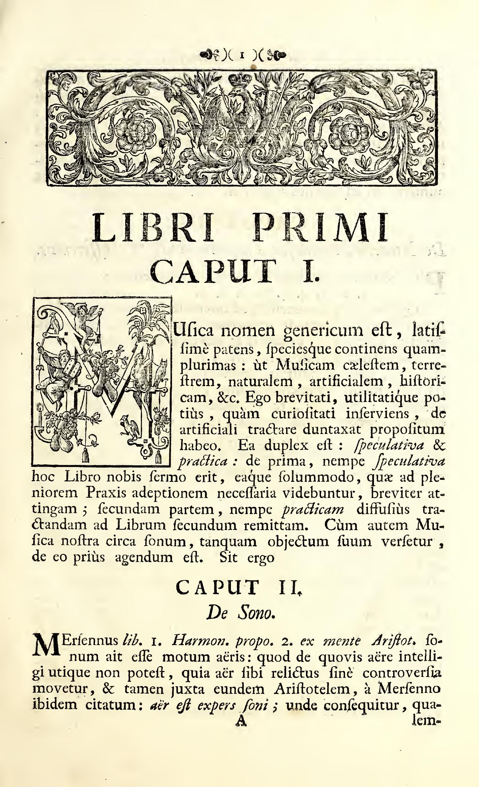
原典のページ（第1部 第1章） — 「Musica（音楽）とは総称である」という定義から始まる思弁編の冒頭。装飾頭文字と旧字体のラテン語が、1725年のウィーンの本らしい風格です。
第1部（思弁編）の骨格
音程は数比（プロポーション）から説き起こす。オクターブは「全ての音程の母」と位置づけられる
3つの運動：順行（rectus）・反行（contrarius）・斜行（obliquus）
分類 音程
完全協和音 ユニゾン・完全5度・オクターブ 不完全協和音 長短3度・長短6度 不協和音 2度・4度（低音に対して）・7度・増減音程
四つの根本規則（Regulae cardinales）
規則1 完全協和音 → 完全協和音：反行か斜行でのみ 進む
規則2 完全協和音 → 不完全協和音：3種の運動すべて可
規則3 不完全協和音 → 完全協和音：反行か斜行でのみ 進む
規則4 不完全協和音 → 不完全協和音：3種の運動すべて可
斜行は全ての場合に合法です。フックス曰く「三種の運動の知識と正しい用法に、律法と預言者（＝全て）がかかっている」。平行5度・8度禁止は、この規則1の言い換え です（完全→完全へ順行で進むことが、すなわち連続完全音程）。規則3は「隠れた平行」（順行で完全協和音に到着すること）も禁じます。規則3は「隠れた5度・8度」の検出にも使えます。
第2部（実践編）：種（スペキエス）対位法の5段階
定旋律（cantus firmus）に対して、段階を踏んで対位声部を書く訓練です。2声→3声→4声と声部数を増やして同じ種を繰り返し、その後、フーガ、転回可能対位法（二重対位法）へ進みます。
第1種 音対音（全音符同士）。始まりは完全協和音。終わりは、定旋律が下声なら長6度、上声なら短3度を置く決まり
第2種 2音対1音（2分音符）
第3種 4音対1音（4分音符、経過音の扱い）
第4種 シンコペーション（掛留＝サスペンション。結ばれた不協和音の準備と解決）
第5種 華麗対位法（floridus。ここまでの混合・装飾）
原典のページ（p.86、3声の第1種） — 終止直前で完全→完全へ順行せざるを得ない場面を、師アロイジウスが「他にどうしようもない」必然の例外として認めるくだり。対話形式だからこそ、規則と例外の話し合いがそのまま残っています。
フックス自身の「例外」の置き方
3声書法では内声同士など、規則の厳密さが「重い理由（ponderosae rationes）」で緩む場面を本文が認める。終止直前で完全→完全の順行が「他にどうしようもない」場合は許容（必然の例外）
内声同士の4度は不完全協和音の役目を果たすものとして扱い、規則の適用が変わる
師は「この種（スペキエス）の難しさゆえに、自由な作曲では避けるべきことも、ここでは必然に譲る所が多い」と明言する——禁則は訓練の様式内の法であり、フックス自身その枠を自覚していた
限界：フーガ編と二重対位法の詳細手順、旋法ごとの定旋律課題の個別解法は、ここでは地図のみです。
4. 禁則は、絶対か 原典の規則と、現代の説明を分けて読む
平行5度・8度は、なぜ禁じられてきたのか。ここでは原典側の規則 （フックス四規則＋リムスキーの厳禁）と、現代の説明 （声部の独立性・様式限定・対例）を混ぜずに並べます。
原典側の規則
フックス（1725） ：四つの根本規則の規則1——完全協和音から完全協和音へは反行か斜行でのみ進む。平行5度・8度禁止はこの言い換え。規則3は「隠れた平行」も禁じるリムスキー（§12） ：同じ旋律位置で2つの三和音を続けてはいけないという連結の規則から、平行5度・平行8度（反行によるものも含む）と平行ユニゾンは厳禁 と帰結するただし両者とも、置き場所は「演習・訓練の規則」です。リムスキーの表現は「生徒には厳禁（défendues à l'élève）」。フックスも3声書法での必然の例外を本文で認めている
現代の説明
守っているのは響きの良否ではなく、声部の独立性です。
完全8度は、上の音の倍音が下の音の倍音列に全て含まれるため、2声が1本に融合し「4声が3声に減った」のと同じになる
完全5度は部分的に融合する（オルガンのミクスチュア・ストップが5度を重ねて明るさとして聞こえるのが証拠）
問題は「声部が何本聞こえるか」。単独の5度・8度は無問題で、禁じられるのは同じ声部対で連続 すること（融合が持続して固定するから）
図解：2つの声部が1本に「融合」する
完全8度で2声が同じ方向に動くと、上の声部の倍音は下の声部の倍音列の中にすっぽり収まってしまい、耳には「2本の旋律」ではなく「太くなった1本」に聞こえます。禁則が守ろうとしているのは、この聞き分けです。
独立した動き（反行・斜行など）
2本の線として聞き分けられる
完全8度の平行（融合する）
間隔が固定され、太い1本に聞こえる
模式図です。左＝声部が別々に動く場合、右＝完全8度の間隔を保ったまま平行移動する場合（紫の帯は「融合して聞こえる」イメージ）。
絶対ではない理由 — 6つの視点現代の説明（2026-11-10 収集ノートより）
様式と歴史の側から
様式限定の規則 ：禁則の管轄はおよそ15〜19世紀のヨーロッパ対位法（共通時代）。フックス（1725）が集大成し、ハイドン・モーツァルト・ベートーヴェンが学んだ。禁止を初めて唱えたのは1300年頃のヨハンネス・デ・グロケオとされる昔は標準だった ：9世紀以降の中世オルガヌムは平行4度・5度が基本技法（旋律を太く荘厳にするのが目的）。禁止は、対位法がオルガヌムと自分を区別するために生まれた様式的・教育的な線引き、という説明もある大家にも例外 ：オケゲム、ジョスカン、バッハ、モーツァルトにも例外が実在する。「音楽は芸術であって精密科学ではなく、正当な例外のない規則はない」。減5度→完全5度の「モーツァルト5度」のような公認の例外もある 使い方の側から
オーケストラの重複は別物 ：旋律をオクターブで重ねるのは融合が目的そのものなので、違反に数えない。禁則は「独立させたい声部同士」の話意図的に使う音楽 ：ドビュッシーの平行和音（プラニング、『沈める寺』）は和音を機能ではなく色として扱い、オルガヌム風の古風さも狙った。先行例にムソルグスキー、サティの4度和音、プッチーニ『ラ・ボエーム』第2幕序奏、ストラヴィンスキー『春の祭典』の原始的な響き。ロックのパワーコードは平行5度の連続そのもの（太い1本が目的）。民族音楽や日本の伝統音楽にも自然に現れる調律起源説（一説として） ：中全音律の時代、平行5度では「空虚な5度」のうなりが強調され不快だったため、という説。平均律が標準の現代では理由の合意が取りにくくなった、という指摘もある。一説として扱う この手帖での扱い だから実習では「禁則」と断定せず、「独立させたい声部の間では避ける（共通時代の様式）」 という形で点検します。融合させたい所（オケのオクターブ重ねなど）は対象外です。
現代の説明の主な出典（2026-11-10検索）：Two voices that stop being two（acoustics-music-theory.com） ／School of Composition “What is Wrong with Parallel Fifths?” ／Wikipedia “Consecutive fifths” ／Fiveable AP Music Theory ／toha.jp「平行5度」 ／Songtive ブログ 。原典側の規則はフックス／リムスキーの抽出に基づき、出典を分けて表示しています。
この章の根拠は、巻末「ヴォイシング・チェック」20項目のうち理論系の4項目（平行5度・8度／隠れた平行／重複／掛留）です。読み終わったら巻末で点検できます。
リムスキーの原理 楽器より先に、声部の運び
リムスキー＝コルサコフ『管弦楽法原理』（1913）の核は、楽器の知識ではなく「声部（パートの線）の正しい扱い」です。響きが悪い原因は、楽器選びより声部の運びにある——という立場で読んでください。
公理
良い管弦楽法 ＝ 声部の正しい扱い
和音の並べ方、重ね方、旋律の置き場。この3つが決まれば、響きの大半は決まります。
和音は基本4声RIMSKY — CHORDS 原理
声を増やす時は、上声部のオクターブ重ね で。バスの重ねは下側だけ
開離配置でテノールは重ねない フォルテで中音域を空けない 。並べ方は倍音列のとおり——下は開いて、上は密に
書き方の勘所 「何声で書くか」より先に「どの声を重ねるか」を決める。重ねの既定値は上声部です。
ホルンは半分の強さRIMSKY — BALANCE 原理
ホルンはフォルテで、他の金管の約半分の強さ しか出ません。釣り合わせる方法は2つ——
ホルンの強弱記号を1段強く書く
またはホルン2本で1本分 として重ねる
書き方の勘所 同じ f と書いても同じ音量にはならない。楽器ごとの「効きの差」を先に織り込むのがバランス設計です。
最大表現音域と旋律の重ねRIMSKY — MELODY 原理
各楽器には「最大表現音域」 ——一番表現が効く音域——がある。主旋律はそこへ置く
ただしピッコロとコントラバスーンには無い （効果の楽器、土台の楽器だから）
旋律が極端な高音なら下のオクターブ 、極端な低音なら上のオクターブ でも重ねて、響きの中心へ寄せる
同種 divisi 同士のオクターブ重ねは避ける 書き方の勘所 旋律は「出せる音域」ではなく「一番効く音域」で書く。端に寄ったら、オクターブ重ねで中心へ戻す。
編成の人数（弦）RIMSKY — FORCES 原理
大編成の標準とされる弦の人数配分です（第1ヴァイオリンからコントラバスへ）。
16 第1Vn 14 第2Vn 12 ヴィオラ 10 チェロ 8 コントラバス
上から順に少しずつ減る階段状の配分が基準。管とのバランスを考える時の出発点になります。中編成・小編成の人数は下の「音量バランス」②に全表があります。
出典：リムスキー＝コルサコフ『管弦楽法原理』（1913、英訳・本文巻）。楽譜例は別巻のため、この手帖では本文の原理のみを扱っています。
音量バランス 同じ f でも、同じ音量にはならない
原典3冊（ビドール／フォーサイス／リムスキー）の相対表現だけで組み立てた章です。現代の実測値（音圧レベル等）は入れていません——「どの楽器が、どれに対してどれくらい」という関係だけを扱います。
① 相対の強さ フォルテでの釣り合い
金管の中の力関係（リムスキー）
トランペット・トロンボーン・テューバはほぼ互角。ホルンだけが、フォルテで他の金管の約半分 です。
トランペット 基準
トロンボーン ほぼ互角
テューバ ほぼ互角 ※
ホルン 約 1/2
均衡の取り方は2つ：ホルンの強弱記号を1段強く書く ／トランペット・トロンボーン1本にホルン2本 で当てる。※テューバは互角のはずが、トロンボーン3本との和音では構造的に「一段上の強さ」で鳴ります（フォーサイス）——下の③も参照。
4部ホルンを木管アンサンブルに加えると、音量が半分以上増す （ビドール）コルネットは金管で唯一「姿を消せる」楽器。音量はクラリネットの少し上程度で、pp では歌手の声の均衡も乱さない（フォーサイス）
アルト・サクソフォンの音量は、クラリネット4〜5本分に対抗する（フォーサイス）
② 編成サイズで変わる効き方 リムスキーの人数表
同じ f と書いても、編成が小さくなれば弦は先に細ります。リムスキーは中編成を基準に書くのが無難 としています。
弦のパート 大編成 中編成 小編成
第1ヴァイオリン 16 12 8 第2ヴァイオリン 14 10 6 ヴィオラ 12 8 4 チェロ 10 6 3 コントラバス 8–10 4–6 2–3
第1ヴァイオリンが8未満だと、弦と管の均衡が崩壊する （リムスキー）木管は2管・3管・4管で、金管のクラスと対応させるのが編成設計の考え方（リムスキー）
コントラバスの音量調整は、フランスでは弱音器を使わず、Solo／Due Soli の人数指定 で行う慣行だった（ビドール）
③ 呑む楽器・消える楽器 フォーサイス中心の注意集
呑む側
ティンパニー ：バス・ドラム＋シンバルと並んで「オーケストラ全体を最も簡単に呑む楽器」。金管が mp／mf の時でも、ティンパニーは p で書く 。強弱は入りを全部明記し、cresc.／dim. は出発点と到達点を必ず書くテューバ ：トロンボーン3本との和音では一段強く鳴る。p の和音ではテューバを外してトランペットを添える等の代替配置が要るコントラバス ：フルートの低音域をぼかして覆う。伴奏からバスを抜く慣行があるほど
消える側
フルート低音域 ：覆われやすい。特にコントラバスにぼかされる（上記と表裏）バスーン ：背景楽器として理想的だが、覆われると個性が消える。軽いスタッカートでは「出し抜かれ」やすい。持続時間と強さは反比例する（ビドール、Bourdeau の実測表）サイド・ドラム ：屋外でドラム群に対抗すると音量で負ける。楽器の欠陥ではなくバランスの問題ホルンの持続和音の最下声 ：最も息を食い、最も鳴らない。本当の低音はバスーンに任せる（ビドール）
④ 小さい音の書き方 音量を「落とす」仕掛け
divisi を4分割以上にすると音量が落ちる ——pp の仕掛けとして使える。3分割は割り切れず均衡が難しい（リムスキー）弓トレモロは、レガートや指トレモロより音量が小さい 。クレッシェンドしても通常の f には届かない（フォーサイス。ビドールへの名指し反論）実務ルールのまとめ：ホルンは1段強く書く／ティンパニーは p で書く／ティンパニーの増減は出発点と到達点を書く／テューバ入りの和音は一段差を先に織り込む。この4つは巻末のヴォイシング・チェックとも接続しています
出典：リムスキー『管弦楽法原理』(1913)／フォーサイス『Orchestration』(1914)／ビドール『近代管弦楽法』(1904)。すべて原典の相対表現で、現代の実測値は含みません。
3人の先生の見比べ 同じテーマ、違う答え
ビドール（1904・仏）／リムスキー＝コルサコフ（1913・露）／フォーサイス（1914・英）。わずか10年の間に書かれた3冊でも、答えが割れる所があります。迷ったら「現代の標準」印のある側へ。
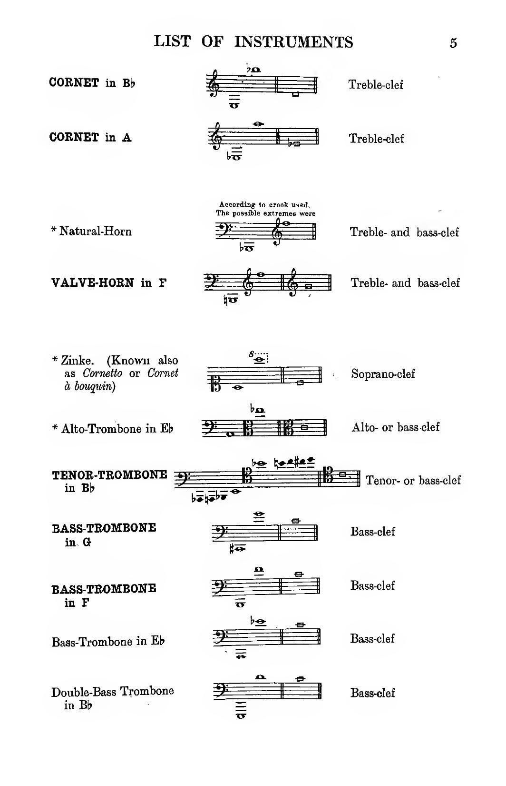
1914年の音域表（金管） — 左が楽器名、真ん中が五線で示した音域、右が音部記号。フォーサイスは本の冒頭で、まず全楽器の音域を「見える形」に置いた。
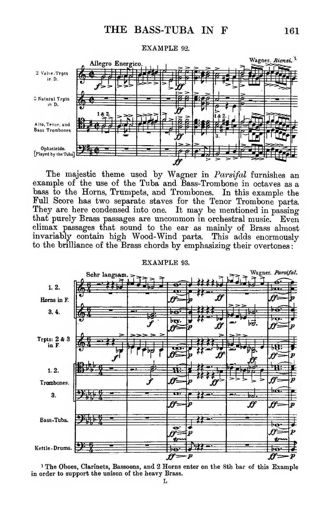
金管の土台の置き方（ワーグナー） — 『リエンツィ』『パルジファル』の総譜例。テューバとバス・トロンボーンを金管の土台に置く書き方を、実例で示している。
テーマ ビドール（1904） フォーサイス（1914） リムスキー（1913）／備考
グロッケンの記譜
実音は記音の1オクターブ上
実音は記音の2オクターブ上現代の標準
フォーサイスと現代標準が一致。ビドール説は古い慣行として訂正済み ティンパニーの調律変更
1音の変更に約1小節
全音の変更でも最低2〜3小節（Moderato）安全側
実務ではフォーサイスの余裕で設計するのが無難 機械式ティンパニー
美学的に反対
ペダル式は1914年時点で存在。ただし音が鈍る（"tubbier"）という留保つきで用途を限定
現代はペダル式が標準。音色の留保は今も聞く価値あり ホルンの塞音
付録：記譜音より半音低く響く
強く塞げば半音上がる（奏者は半音低く読む）現代の標準
旧式のゆるい塞音は下がり、現代の強い塞音は上がる。両説とも場合分けで正しい チェレスタの機構
音叉を叩く
鋼板＋木製共鳴器正しい
音叉式は別楽器ダルシトーンのこと。ビドールの記述は誤り 本の性格
1843年（ベルリオーズ）以降の変更点カタログ
楽器ごとの実務仕様＋名曲の実例譜
声部の扱いの原理（次のセクション）
出典：ビドール『近代管弦楽法』（1904）／フォーサイス『Orchestration』（1914）／リムスキー＝コルサコフ『管弦楽法原理』（1913、英訳・本文巻）。画像2点はフォーサイス1914原典からの切り出し（パブリックドメイン）。
1904年から変わったこと ⚠️ まとめ
ビドールの記述のうち、2026年の標準と照合して「今は違う」ことが分かった点の一覧です。古いスコアを読む時・今の編曲を書く時の、早見表として使ってください。
サリュソフォン ：現役の楽器 → 完全に廃止 。コントラ・バスーン等へ置換が前提ピッコロの最低音 ：C → D が標準 グロッケンシュピールの実音 ：記音の1オクターブ上 → 2オクターブ上 バスーンの下限 ：B♭まで（それ以下は書くな） → 低音Aまで標準 コントラ・バスーンの下限 ：C → 実音 B♭0（A0の機種も） ハープの上限 ：G♭ → G♯7 （範囲は C♭1–G♯7）チェロの高音部記号 ：1オクターブ下読み → 実音で書く トロンボーン ：ストレート管が前提 → Fアタッチメント付きテノールが標準 、実用域は拡大クラリネットの音色区分 ：低・中・高 → 低音＝シャルモー、中音＝クラリオン と分ける用語が普通にサクソフォン ：釣り合いに留保つき → 管弦楽の客演として定着 フルート族 ：アルト／バス・フルートは珍品 → 実用楽器として定着 ティンパニー ：手締め・機械式 → ペダル式が標準、4台セット 。ただし調律設計の原則は不変バス・クラリネット ：通常の低音拡張なし → 記音C（実音 B♭1）までの拡張管が標準 コントラバス ：5弦は普及しつつある段階 → 5弦／C延長管で C1 までが大編成の標準 チェレスタ ：4オクターブ → 4〜5.5オクターブのモデル（Schiedmayer製が標準） チェレスタの機構 ：音叉を叩く（ビドールの記述） → 鋼板＋木製共鳴器 。音叉式は別楽器ダルシトーン（フォーサイス1914で訂正）ホルンの塞音 ：半音低く響く（ビドール付録） → 強い塞音では半音上がる 。ゆるい塞音は下がる——両説は場合分けで成立（フォーサイス1914）クラリネットのシェイク ：不可能な組み合わせの一覧表 → 1914年時点で時代遅れ 。ほぼ全域可能、苦手は6つだけ（フォーサイス1914）ティンパニーの調律変更 ：1音≒1小節（ビドール） → 全音でも最低2〜3小節 が安全（フォーサイス1914）。ペダル式は当時既に存在クロタル（古式シンバル） ：特殊な色彩 → 音程のある打楽器として常用
オーケストラという現場——ルール・用語・対立 ラゴンヌの調査より
ここまでの章が「楽器と音の置き方」だったのに対して、この章は「人が集まって演奏する現場そのもの」の話です。座席の決め方、現場のことば、揉めやすい所——どれも一つの正解があるわけではなく、多くの団体で見られる形を、根拠の強さと一緒に並べました。
この章の素性 素材はラゴンヌの調査ページ「オケのルール・用語・団内コミュニケーションと対立｜プロアマ・日本と海外」（野ション研究収穫箱、Locator：LAGONNE_ORCHESTRA_CULTURE_RESEARCH_20261110_V1）。収集は Parallel Deep Research と X の生の声（496件・抜粋94件）による research_only の素材集 で、証拠状態は SECONDARY 、ほりりん監査は未監査 です。全文と出典の対応は原典のページ側にあります。この章では主要な表を抜き出し、格付け（事実 一次照合済み／通説 ／体験談 Xの生の声／未確認 ）を落とさずに表示しています。
まず押さえる点 この章全体の中心になる見取り図です。「〜が決まり」とは書かず、団体差がある所はそのまま残してあります。
ルールは「国」より「その団体」で決まる。 座席配置（対向配置／アメリカ式と呼ばれる形）、ピッチ、コンマスへの起立などは慣習で、団体・指揮者・曲で変わります。国名のラベルで一般化しないのが出発点です。〔ディープリサーチの中心結論。Tonhalle公式（スイスは442Hz）と Rockford 響（440Hzの解説）で照合〕 事実 「音楽上の権限」と「雇用・運営上の権限」は別物。 指揮者は解釈・テンポ・リハーサルの配分を握りますが、雇用・懲戒・予算は別のルートです。例：ウィーン・フィルは楽員総会が最高機関、LSO（ロンドン交響楽団）は選挙で選ばれた奏者理事＋外部理事＋マネージングディレクターの理事会で運営されます。〔両団体の公式サイトで照合〕 事実 日本のオケ語は、ドイツ語由来と業界ことばが混在している。 ゲネプロ（Generalprobe＝総稽古）と G.P.（Generalpause＝全員休止）は別物です。プルト、表・裏、トップ／トップサイド、乗り番／降り番、トラ、といった言葉が現場で使われます。〔COSMUSICA（奏者による解説）で照合。語源の細部は未確定〕 事実 語源は未確認を含む アマチュア団体の団費は「月額だけ」では比べられない。 例：オケアン京都は月2,000円＋演奏会参加費は都度・休団費3,000円。加古川フィルは月3,000円／半年18,000円／年35,000円で、無届で3か月欠席すると退団扱いとされます。〔両団体の規約で照合〕 事実 アマチュアの揉め事でよく語られる型は「選曲・席（1st／2nd、プルト順、降り番）・出席率・お金（団費／トラ謝礼）・人間関係（派閥／古株）」。 弦と管の温度差（学生では「文化系ノリ vs 吹奏楽部ノリ」と語られる）もよく出てきます。ただし頻度の統計はないので、これは事実ではなく「よく語られる型」として置きます。〔Xの体験談多数〕 体験談 プロの対立は、労使問題として表に出ることがある。 例：デトロイト響の27週スト（2011）、ミネソタ管の15か月超のロックアウト（2012〜14）、日本フィル争議（1972年財団解散→1984年和解、新日本フィルへの分裂）、大阪シンフォニカーの首席降格を中央労働委員会が不当労働行為と認定した例（2010）。〔ICSOM、League of American Orchestras、日本フィル公式沿革、中労委データベースで照合〕 事実 ジェンダーと採用。 ウィーン・フィルが初の女性正式団員を認めたのは1997年2月（ハープのアンナ・レルケシュ）。衝立（ブラインド）オーディションは Goldin & Rouse（2000）で女性の採用確率を上げる証拠とされますが、著者自身が推定の誤差の大きさと逆向きの効果にも触れています。〔LA Times 1997年記事、American Economic Review 論文要旨で照合〕 事実
座席と役割 弦の「プルト」を中心に、現場の席と役割の呼び方です。首席の仕事の範囲や譜めくりの担当は団体で違うため、一般形として読んでください。
項目 内容 確度
座席配置 「アメリカ式（1st／2ndが下手側に並ぶ）」と「ドイツ式／対向配置（1stが下手・2ndが上手）」は通称です。ドイツのオケでも隣接配置はありますし、日本でも対向配置はあります——国別の固定ルールではありません 通説 プルト 弦は2人で1台の譜面台を共有します。前から第1プルト、第2プルト…（「いちプル・にプル」） 事実 COSMUSICA表・裏 客席側＝表、舞台奥側＝裏。指揮者の左手側パートは右が表、右手側パートは左が表になります。div.（分奏）では表が上・裏が下を受け持つことが多いとされます 事実 COSMUSICA譜めくり 裏（inside player）がめくり、表は弾き続ける形が多くの団体で見られます。難所や div. では例外を事前に決めておくのが実務です——全団体の規則ではありません 通説 トップ／トップサイド 第1プルトの表＝トップ（首席）、その隣＝トップサイド。1stヴァイオリンのトップがコンサートマスターです 事実 COSMUSICAコンサートマスター 英では leader、米では concertmaster と呼ばれます。1stを率い、ソロ、チューニングの統率、弦のボウイング調整、指揮者と団員の橋渡しを担います。ただし雇用上の権限があるとは限りません 通説 首席・パートリーダー 演奏上のリーダーと事務上の連絡係が別人のことがあります。例：加古川フィルは事務上の「パートリーダー」と、曲ごとに互選する「パートトップ」を分けています 事実 加古川フィル規約ライブラリアン 楽譜の版の手配、カット、div. の割振り、書き込み・ボウイングの転記、配布・返却を担います 事実 Racine響マニュアル＋Xインスペクター／パーソネル・マネージャー 出欠、人員手配、連絡の担当。日本の「インペク」と海外の役職は一対一には対応しません 通説 ステージマネージャー（ステマネ） 舞台配置、出捌け（出入り）、進行を担います 事実 COSMUSICA
チューニングとピッチ——団体の指定に従う
一般的な形は、コンマスが合図し、首席オーボエが A（ラ）を出し、管と弦をグループに分けて合わせる、というものです。順番やコンマスが立つかどうかは団体の慣習で変わります。オーボエが A を出す理由として、倍音が豊かで通る音だから（Tonhalle）、昔のガット弦より安定していたから（Rockford）といった説明があります。今は奏者がチューナーで確認している、と Tonhalle は書いています。 通説
ピッチは団体の指定に従います。例：スイスの Tonhalle は 442Hz （同団体の公式説明では「スイスでは442Hz、1939年ロンドン会議の440Hzより少し高い」）。一方で「日本のプロオケは442Hzが一般的」は、解説サイト等でよく言われる通説止まり で、団体ごとの公式なピッチ一覧はこの調査では見つかっていません。「442Hzが世界標準」という説明（日テレ『リバーサルオーケストラ』豆知識）も Tonhalle の記述と食い違うため、そのままは採用しません。「独墺は444〜446」「カラヤン時代のベルリン・フィルは446」も二次情報の伝聞で、一次資料は未確認です。 事実 Tonhalle公式 通説 日本442Hz 未確認 独墺・カラヤン説
ピアノ協奏曲の場合は、調律を変えられないピアノの A をもらって合わせます。〔Rockford、日テレ解説〕
Xの生の声（体験談として分けて置きます）：アマチュアではチューニングが“儀式化”して、ずれたまま終わる例もある（@va_ooya）。吹奏楽出身者には、オケのチューニングは「面倒なしきたり」に見える（@ZunBia39687）。
リハーサルの作法（例示）
例：Portsmouth響ハンドブック ——開始時刻には準備を済ませて着席している。鉛筆を持参する。電子機器は消音。セクション内の音楽的な質問は首席を通す。ボウイングは弦の首席がコンマスと調整し、書き込んで配る 事実 例：Racine響マニュアル ——無断欠席には罰則があり、ドレスリハーサル（総稽古）を欠席すると降板の可能性があります 事実 質問は小節番号・練習番号で短く。個人的なメモと全体の指示を書き分け、書き込みは鉛筆で（レンタル譜は特に） 通説
Xの声：書き込みは必須（解釈の統一）で、ボウイングは演奏会ごとに違うこともある（@ryomadayo_wao）。リハでボウイングを変えた瞬間に全員の意図がそろった（@soukanomatsu）。劇伴の現場では「ボウイングは適当で」と回ってくることもある（@TsukamotoVc）。
本番の作法・トラと団費
入場順、チューニングの合図、コンマスや指揮者に起立するか、ソリストやセクションへの拍手、退場順、服装はすべて団体の指示に従います 。「コンマスに起立」は世界共通ではありません
服装も団体や公演ごとに指定されます（例：Racine響はクラシック、ポップス、クリスマス・ポップスで服装を分けている）
トラ（エキストラ）・団費の例 ：オケアン京都＝月2,000円（同一世帯2人目から1,000円、学生と25歳以下は割引）、演奏会参加費は都度、休団費3,000円。加古川フィル＝月3,000円／半年18,000円／年35,000円（未成年は月1,500円）、無届3か月以上欠席で退団扱い、入団にはパート責任者の了承が必要、「一人一役」のスタッフ制度 事実 両団体規約 Xの声（相場は地域・団体差が大きい）：アマのトラ謝礼は中部近辺で1回5千円程度、1万円以上に驚いた（@AppassSys）。5千円の予定が1万円包まれていた（@pontering）。エキストラを禁止し謝礼も出さない方針の団体もある（@sai_kisaragi）。
用語集（主要なもの） 現場のことばから主要なものを選びました。全文は原典のページ（Locator：LAGONNE_ORCHESTRA_CULTURE_RESEARCH_20261110_V1）にあります。語源は一次の初出が確認できていないものが多く、「〜とされる」にとどめてあります。
語 意味 由来・使用域 確度
ゲネプロ／ゲネ 本番前の総稽古。転じて本番前最後のリハーサル。「ゲネ本」＝ゲネ＋本番 独 Generalprobe の日本式略。プロ・アマ・舞台全般 事実 GP（ゲーペー） ゲネプロの略。現場ではドイツ語読みが多いとされます Generalprobe の頭文字。スケジュール上の言葉 事実 G.P.（ゲネラルパウゼ） 楽譜上の全員休止 独 Generalpause。楽譜・リハで使う。ゲネプロとは別物 事実 トラ 臨時に雇う奏者（増員または代役） 「エキストラ」の略と説明されることが多いとされますが、成立史は未確認。日本のプロ・アマ。「トラに入る」 意味は通説 語源は未確認 乗り番／降り番 その曲や公演に出る／出ない（乗る・降りる） 「舞台に乗る・降りる」とする説があるとされます。「乗り板」説も X 上にあります。管打で曲ごとに入れ替わります。降り番は欠席や罰ではありません 意味は通説 語源は未確認 前プロ／中プロ／メイン 演奏会の1曲目／中間（協奏曲が多い）／メイン曲 前・中＋プログラム、main。日本の略語 通説 プルト 弦の譜面台、その2人組の単位（いちプル・にプル） 独 Pult。英語では desk。「第2プルト」は2台目の譜面台で、2ndヴァイオリンのことではありません 事実 表／裏 プルトの客席側／舞台奥側 日本語の空間ラベル。上下関係ではありません 事実 トップ／トップサイド 首席（1プル表）／その隣 英語由来の和製用法とされます。団体で職務は異なります 事実 div.（ディヴィ） パートの分奏（にディヴィ・さんディヴィ） 伊 divisi。3つ以上に分かれる場合は分け方を事前に確認します 事実 インペク インスペクター（出欠・人員手配の担当） 英 inspector。海外の personnel manager とは一対一対応しません 通説 ステマネ ステージマネージャー 略語。舞台全般 事実 出捌け（ではけ） 舞台への出入り 舞台用語。「はけて〜」 事実 おはようございます 夜でもその日最初の挨拶 歌舞伎の「お早いお着き」が由来とする説があるとされます。業界全般 由来は通説 ドイツ音名（ツェー・デー・エー…） C＝ツェー、D＝デー、E＝エー、A＝アー、H＝ハー（英語の B♮）、B＝ベー（英語の B♭） ドイツ語の音名。「エー」は英語の A ではなく E です。混同に注意 事実 音名対応Leader（英） コンサートマスター 英国での呼称。「section leader」はパートの長 通説 Principal / Tutti 首席／一般団員（総奏） 英、伊 tutti。文脈で意味が変わります 通説 Dep 代役（deputy） 英国。劇場・フリーの仕事で使います。承認ルールがあります 事実 英MUガイダンスFixer / Contractor 奏者を手配する人 英／米。録音やフリーの仕事 事実 英MUSub / sub list 代奏者／代奏者リスト 米。リストに載っても仕事が保証されるわけではありません 事実 Racine響の定義Desk / inside・outside プルト／裏・表 英。inside が譜めくりをすることが多いとされます 通説 Service / call リハーサルや本番の契約上の単位 雇用用語。契約ごとに長さが違います 通説 Trial / probation / tenure 試用／試用期間／終身在籍権 雇用用語。国によって法的な意味が違います 事実 NAASガイドライン、WNO契約
出典：COSMUSICA（奏者による解説）を中心に、英MU（Musicians' Union）のガイダンス、Racine響マニュアル、NAASガイドライン等で照合したもの。用語の語源は弱い所が残ります——トラ＝エキストラ略、乗り番＝舞台に乗る、といった説明はいずれも一次の初出が未確認です。
対立の型 揉め事を「誰が悪いか」ではなく型で見るための一覧です。Xの体験談が中心の型は、その偏り（目立つ話・不満の話に寄る）も含めて読んでください。頻度データはありません。
型 典型的な構図 根拠の種類
指揮者 vs 奏者 解釈の押し付け、初歩的すぎる要求、怒鳴る、話が長い。プロでは「初歩的な要求をする指揮者は嫌われる」と昔から言われるとされます（@kozawa）。「怒るのは論外」という指揮者側の規範の声もあります（@mogimogimogigi） 体験談 X多数＋歴史的逸話コンマス＝緩衝材 団員の不満を察して指揮者にそれとなく伝える。必要なら直言する。コンマス役がいない団体はノイズが放置されるとされます（@Haatainen） 体験談 X（プロ・アマ）＋ディープリサーチ弦 vs 管 音量、ピッチ（弦は下がり管は上がる、と語られる）、文化の違い（文化系 vs 吹奏楽部）。調査側は「性格の違いではなく、音響と聞こえ方の違い」と注意しています。対立を嫌って辞めた人、和気あいあいな団体という反例もあります 体験談 Xパート内の序列 1st／2ndの割り振り、首席と一般団員、実力か出席率か。普段降り番の人が代奏し不満が溜まる例（@KarlJaspers1738） 体験談 X（アマ）＋規約（加古川のパートトップ互選）出席率 弦の出席率の悪さ、上手い人ほど直前に来る、出席率でのマウント。「来てもらえる工夫が先」という反対意見もあります（@esbasgfesfb） 体験談 X（アマ）多数選曲 管打の出番（トロンボーン・テューバがない曲）、古典か派手な名曲か。揉めずに決まる団体もある、という反例も報告されています 体験談 X（アマ）お金 団費、トラ謝礼の相場、依頼書の有無。プロ側でも待遇の提示はまちまちとされます（@ta1_oboe） 事実 規約＋ 体験談 X派閥・古株 閉鎖的な空気、分裂、燃え尽きて退団。「近所のアマチュア団体は3つに分裂」（@rapalaF13）。統計はありません 体験談 X運営主体 vs 団員 市の関与する運営者が選曲もプルト順も決める、という伝聞1件 体験談 X（伝聞1件・弱い証拠）労使 賃金・年金・シーズン短縮、ロックアウト、組合員への不利益取扱い。下の実例表を参照 事実 一次資料（ICSOM、中労委、公式沿革）
楽員の自治——「プレイヤー・パワー」の形は団体で違う
ウィーン・フィル 事実・公式 ：楽員総会が最高機関で、12人の選出委員に多くを委任します。規約改正には4／5の賛成が必要。ウィーン国立歌劇場管弦楽団に入り、3年間実績を示してから、ようやく入会を申請できますLSO 事実・公式 ：1904年に「楽員が形づくったオケ」として生まれ、今も自主運営。理事会は選挙で選ばれた奏者理事、外部理事、マネージングディレクターで構成され、オーケストラ委員会と財務委員会に分かれていますベルリン・フィル ：楽員の参加は財団の枠組みの中にあります。公式ページの照合はタイムアウトで未完了です 未確認 日本 ：楽員会や楽団員委員会は、団体によって権限がまったく違います。労働組合とも別のことがあります
労使・紛争の実例 要点 出典
デトロイト響 2011 27週のストの末、2011年4月8日に4年契約を批准。司書を交渉単位に残し、年金を維持し、多層賃金を拒否。夏休みは9週→4週に削減。「金でも権力でもなく敬意の問題」は楽員側の見解です ICSOM会報（一次・当事者側） ミネソタ管 2012〜14 15か月超のロックアウトが2014年1月に終結。給与・福利は約15%減（後の2年で減少幅は約10%に）。音楽監督ヴァンスカは辞任 League of American Orchestras（Star Tribune記事の引用） 日本フィル争議 1972年6月30日に財団解散許可。楽員の約2／3が残って提訴し、小澤征爾らは新日本フィルを結成。1984年3月16日に和解。過程で1983年に日本音楽家ユニオンが結成されました 日本フィル公式沿革（解散と和解の日付）、Wikipedia（分裂比率・ユニオン結成） 大阪シンフォニカー 2007〜10 首席打楽器奏者を一般奏者へ2段階降格したことを、大阪府労委が不当労働行為と認定。中労委は2010年7月21日に再審査申立てを棄却。降格で月収は約3割減。理由とされたリハーサル遅刻などは形式的には就業規則違反だが、処分は均衡を欠くと判断されました 中労委命令データベース（一次）
この表は照合済みの実例だけに絞りました。フィラデルフィア管の破産再建（2011〜12、ストではない）、シカゴ響（2019）、ボルチモア響（2019）等は素材側で本文未照合・報道経由のため、ここには載せていません。ハラスメント・ジェンダーについては冒頭の第7点も参照：NAAS（2021）の提言（最初から最後まで衝立を使う、テニュア審査の透明化、相談役の設置）は公式の提言ですが非拘束で、米国の全団体が実施しているという証拠ではありません。
プロとアマの違い 違いは演奏の質の上下ではなく、経済関係と組織形態の違い、というのが調査側の注意です。
観点 プロ アマチュア
お金の向き 楽団から奏者へ報酬が出ます（雇用、出演契約、トラ謝礼） 奏者が団費を払い、ボランティアで運営します 出欠 引き受けた公演は契約上の義務。休みや代奏は規定で管理されます 規約上の義務（例：無届3か月で退団扱い）や、本番に乗る条件で管理されます 入団 オーディション、試用（トライアル）、テニュア。招待オーディションや特別契約楽員の制度もあります（X：@ta1_oboe） 見学、体験、パート責任者の了承、オーディション（管だけある、もよくあります） リーダー 雇用上の役職（首席、コンマス） 互選や総会で選びます。曲ごとに互選のパートトップ（加古川）、選曲委員会（京都） 降り番 副業や休養の時間にもなります。待機義務がある団体もあります（X） 管打で誰を降ろすかが揉める種になりやすいと語られます 練習量 少ない例が多いとされます（例：リハ2回＋当日ゲネ→本番。劇伴案件のXより） 長い期間をかけます。出席がそろわないことが課題になりやすいです 揉めごとの出口 楽員会、組合、労働委員会、裁判 役員会、総会、退団、分裂 人の構成 ― 弦は不慣れな人もいて管は歴戦の勇士、弦はトラが多い、と語られることがあります（X・複数） 体験談
※ 調査側の注意：「プロ／アマ」は経済関係と組織形態の違いであり、演奏の質の上下ではありません。
日本と海外（短く） 国で一括りにせず、仕組みの違いとしてだけ置きます。
日本 ：ドイツ語由来のリハーサル用語と和製の業界語が多い。アマチュア文化が厚いとされます（一説に全国約1,500団体＝日テレ豆知識、未検証 ）。日本オーケストラ連盟は加盟楽団一覧を公開しています（正確な団体数はこの調査では未確定。日テレ豆知識は「登録プロオケ37」と記載）米国 ：AFMとICSOMがあり、ストやロックアウトが目に見えやすい形で表に出ます。sub list、テニュアの仕組みがあります英国 ：leader、dep、fixer、自主運営の団体（LSO）。MU（Musicians' Union）が合意文書やガイダンスを公開していますドイツ・オーストリア ：Konzertmeister、Stimmführer、Pult、Generalprobe といった言葉の本場。公的雇用が多いとする X 投稿はありますが一次資料は未確認です。ウィーンの「歌劇場→フィル」の二段構えは特殊なので、一般化しません 未確認 公的雇用の一般論
ステレオタイプへの注意 （調査側）：「日本は上下関係、欧州は民主的」という見方は、ウィーンの女性排除の歴史や、日本の労働法上の保護、アマチュア団体の総会自治を見落としています。
この章でまだ弱い所（開いたまま置く）
ピッチの国別表は作れません。 一次資料で確認できたのは「スイス442（Tonhalle）」と「440の解説（Rockford）」だけです。「日本442」は二次情報の通説にとどまります用語の語源は弱い。 トラ、乗り番、業界の倒語の起源は、いずれも一次の初出が未確認ですアマチュアの揉め事の型には頻度データがありません。 Xの体験談は目立つ話・不満の話に偏ります。「弦と管は必ず対立する」とは言えません（和気あいあいとした反例もあります）収集の偏り ：X検索は直近1か月の投稿が多く（2026年10〜11月）、プロ奏者本人の発信は少なめで、アマ・学生の声が多い構成です。オペラ・バレエのピット特有の慣習、ユースオケ、ピリオド楽器オケ、アジア他地域の事情はこの素材では触れられていません
出典：ラゴンヌ調査ページ（野ション研究収穫箱、Locator：LAGONNE_ORCHESTRA_CULTURE_RESEARCH_20261110_V1）——Parallel Deep Research＋X生の声496件・抜粋94件による research_only 素材集、証拠状態 SECONDARY、ほりりん監査は未監査。個別の出典（Tonhalle公式、Rockford響、COSMUSICA、オケアン京都／加古川フィル規約、ICSOM、League of American Orchestras、日本フィル公式沿革、中労委データベース、LA Times、Goldin & Rouse 2000ほか）は表中に併記しました。
ヴォイシング・チェック（20項目）
ビドール全篇から事故になりやすい所を抜いた10項目に、リムスキーの原理から6項目、さらにフックスの対位法とリムスキーの和声学から4項目を足した仕上げの点検表です。タップすると印がつきます（この画面の中だけの印で、保存はされません）。
0 / 20 項目を確認済み
✓ ホルンは奇数＝高音、偶数＝低音で書き分けたか唇は高音用か低音用かを選ばないといけない楽器。高音の直後の低音は良い音にならない。 ✓ 持続和音の本当の低音を、バスーンに任せたか4部ホルンの最下声は、最も息を食って最も鳴らない。低音はバスーンの方が経済的で確か。 ✓ オーボエに一番良い音域を使い、侵略的な低音を避けたか音色が際立ちすぎる楽器。持続音・和音・第2プランでは「常によく聞こえる」前提で書く。 ✓ チェロとコントラバスを対にしたかチェロだけでは低音不足、バスだけでは鈍くて音程が不正確。対で初めて澄んだ基音になる。 ✓ バスーンの疑わしい音を、チェロの斉奏で支えたかバスーンとチェロの斉奏は、悪い音を美しくする定番の助け合い。 ✓ ティンパニーの調律変更に、小節の余裕があるか1音の変更に約1小節。大家は長3度を超える変更を避け、必要なら段階的に導いた。 ✓ シンバルとタムタムの「止める／残す」を書いたか書かないと奏者は判断に迷う。タムタムは和音が変わったら振動を止めるのが約束。 ✓ ハープの片手和音は4音以内か、共鳴の余白があるか奏者は第5指を使わない。ダンパーがないので、響きが消える時間を残す。 ✓ 弦の完全5度重音と、ビオラの伸び限度を守ったか完全5度の重音は音程が狂いやすい。ビオラは同一弦で完全4度、2弦でオクターブまで。 ✓ トロンボーン最低部の音を「全曲に数回」の特別な音にしたか『トリスタン』の低音B♮は全曲で1回だけ。最低部の数音は切り札として使う。 ✓ 和音の中音域が空いていないか（リムスキー）フォルテでは特に。並べ方は倍音列のとおり、下は開いて上は密に。 ✓ テノールをむやみに重ねていないか（リムスキー）和音は基本4声。開離配置のテノールは重ねないのが原則。重ねるなら上声部のオクターブ。 ✓ バスが他の声部に混ざっていないか（リムスキー）バスの重ねは下側だけ。和音の土台は独立させる。 ✓ ホルンの強弱を、他の金管より1段強く書いたか（リムスキー）ホルンはフォルテで他の金管の約半分の強さ。記号を1段上げるか、ホルン2本で釣り合わせる。 ✓ 旋律が各楽器の「最大表現音域」に入っているか（リムスキー）一番表現が効く音域に主旋律を置く。ピッコロとコントラバスーンにはこの音域が無い。 ✓ 極端な高音・低音の旋律に、中心寄りのオクターブ重ねをしたか（リムスキー）極端な高音は下のオクターブ、極端な低音は上のオクターブでも重ねて、響きの中心へ寄せる。 ✓ 独立させたい声部の間で、平行5度・8度になっていないか共通時代の様式の規則です。重ねて太くするのが目的なら対象外——詳しくは「理論の土台」の章の『禁則は、絶対か』にまとめました。 ✓ 不完全音程から完全音程へ、順行（平行移動）で着地していないか（隠れた平行）フックスの規則③。平行そのものだけでなく、同じ向きに動いて完全音程へ着く動きも、独立させたい声部では避ける。 ✓ 和音の重複は根音が優先になっているか。転回形では根音か5度を重複しているかリムスキー和声学の原則。六の和音では根音か根音の5度が重複の候補で、度数ごとの指定もある。 ✓ 掛留（サスペンション）の解決音を、他のパートが先取りしていないか解決する音が他の声部に既にある時は、掛留そのものを作らないのがリムスキーの規則。
点検結果を文章でコピー
印を全部はずす
楽譜チェックの頼み方
楽譜（スコアの画像・PDF・MusicXMLなど）を渡す時に、下の文を一緒に添えると、この手帖の基準でヴォイシングを点検できます。点検は「音域オーバー／移調の実音ミス／危ない音の使用／息と休止の不足／重音の可否」の順に見ます。
コピーして、楽譜と一緒に送ってください。
この楽譜を、管弦楽法てちょう（ビドール『近代管弦楽法』＋リムスキーの原理＋フォーサイスの実務仕様＋現代の注記）の基準でヴォイシング・チェックしてください。
見る順番：
1. 音域オーバーと移調楽器の実音ミス（フルート／ピッコロ／クラリネット／ホルン／コントラバスなど）
2. 「危ない所」に触れている音・奏法（バスーンの高音A♭、トロンボーン第7ポジション、弦の完全5度重音など）
3. ホルンの高音／低音の書き分けと、持続和音の低音の置き場
4. 息の持続と休止の不足（コントラ・バスーン、ティンパニーの調律変更、ハープの共鳴の余白）
5. チェックリスト20項目に照らした総評
事実（楽器の仕様）と意見（響きの好み）は分けて書いてください。
この文をコピー
出典：Ch.-M.ビドール（ヴィドール）『近代管弦楽法』塚谷晃弘訳、全音楽譜出版社（1962）／原著 Technique de l'orchestre moderne （1904）。ベルリオーズ『楽器法』（1843）への補遺として書かれた書物です。第2期の追加出典：Cecil Forsyth『Orchestration』（1914年初版、パブリックドメイン。楽譜・表の画像は同書からの切り出し）／Nikolay Rimsky-Korsakov『管弦楽法原理 Principles of Orchestration 』（1913、英訳・本文巻）。理論の土台の追加出典：J. J. Fux『Gradus ad Parnassum』（1725）／Rimsky-Korsakov『実践和声学手引』（1886、仏語版1910）／Savart『音楽の原理と移調法』（フランス、第8版）／Gehrkens『Music Notation and Terminology』（1914、Project Gutenberg #19499）。「禁則は、絶対か」の現代の説明は2026-11-10のWeb検索による現代資料で、原典の規則とは分けて表示しています。
楽器写真（34点）は、しれーりんが収集し、メタりんが出典・ライセンス台帳（2026-11-10照合）と突き合わせて組み込んだものです。原盤と台帳は Drive「管弦楽法_写真・音源_20261110」フォルダに保管。各写真の撮影者・所蔵者とライセンスは、写真下のクレジット行に表示しています。写真はページ表示用に縮小しています。原盤は出典ページで確認できます。非商用限定（CC BY-NC-SA）のダルシトーン写真は今回組み込んでいないため、ダルシトーンのカードは文章のみです。Wikimedia Commons側の403で保存できなかった希少楽器の写真（オフィクレイド、サクソルン各声部、ヴィオラ・ダモーレ等）も未収録です。
音名は原著のドレミ表記（Do=C, Ré=D, Mi=E, Fa=F, Sol=G, La=A, Si=B）から、必要に応じて英米式（C, D, E…）に置き換えてあります。⚠️印は2026年時点の現代標準との照合による注記です。速度の数字は本書に載る実測・実例の目安で、絶対の上限ではありません。
この手帖は編曲の作業用の要約です。迷った時は、楽器カードの「危ない所」と「ヴォイシング・チェック」から先に見るのがおすすめです。